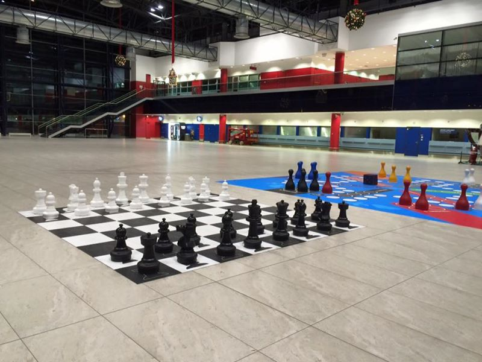
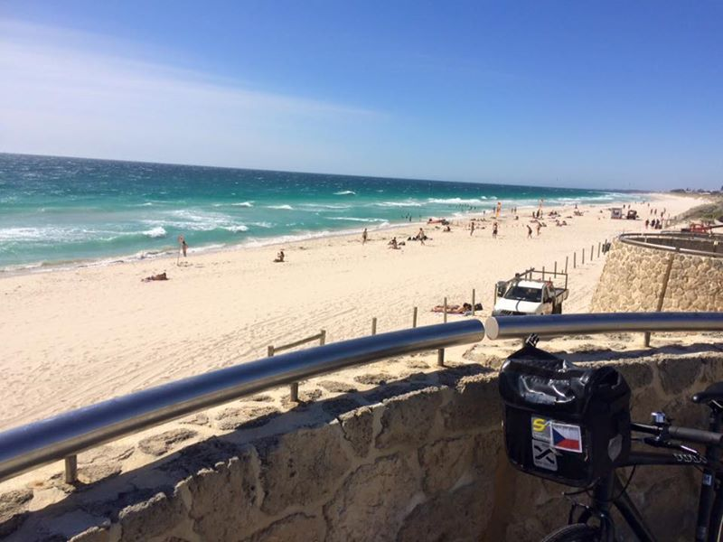
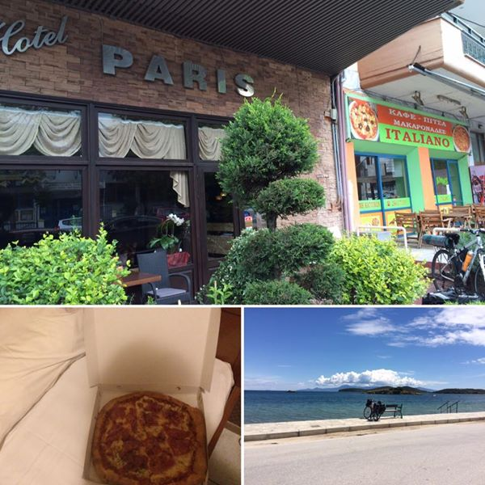
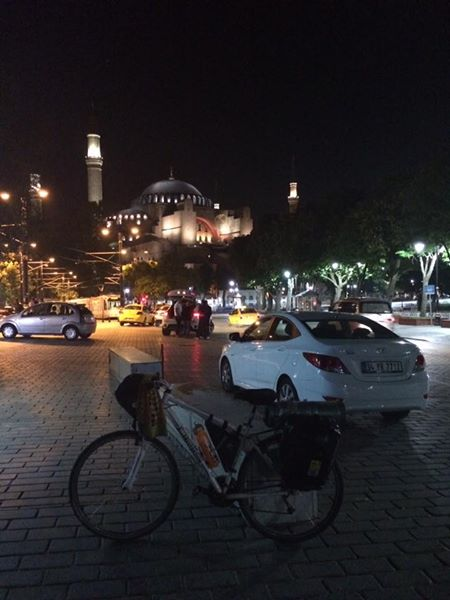
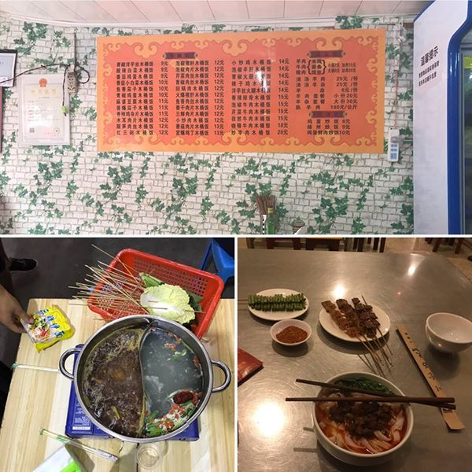
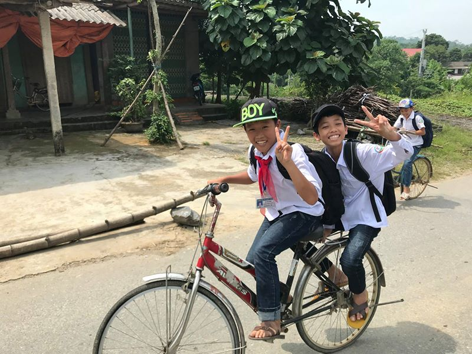
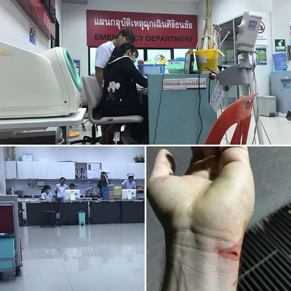
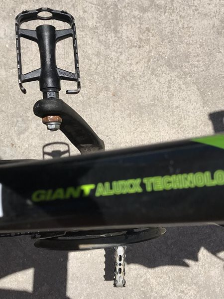
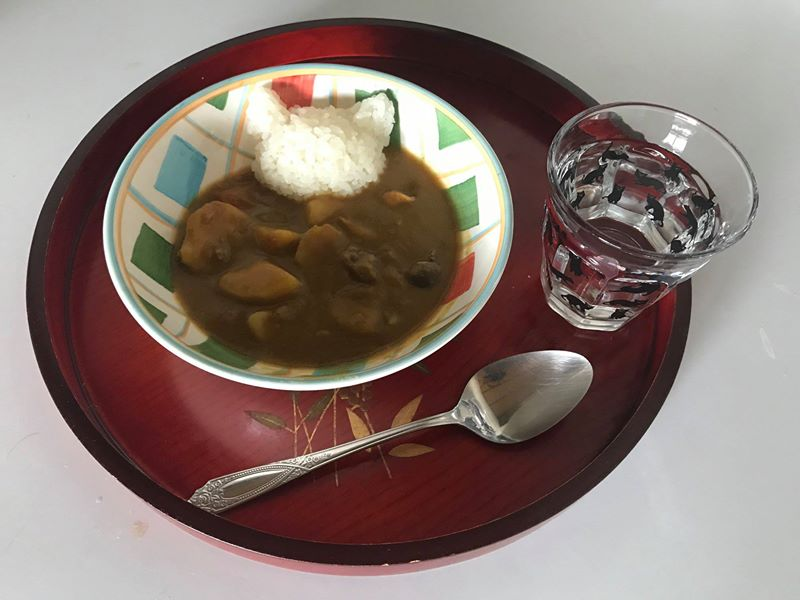
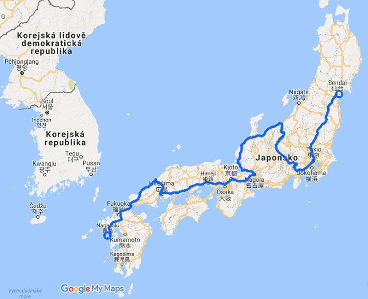

Timeline
Timeline
Ahoj, jsem Kuba a na té fotce to nejsem já. Je to nějaký pán, kterého jsem potkal v Albánii kousek od hranic s Řeckem. Zastavil mě, protože si mě chtěl vyfotit. To se mi během mé poslední cesty stalo několikrát, ale tenhle pán byl trochu jiný než ostatní, kteří se mě obvykle jen ptali, odkud jsem a kam jedu. Tenhle pán se mě nejprve zeptal na věk a během našeho rozhovoru mi pak dvakrát zopakoval, jak je to super, že je mi jen 28 a podnikám tuhle cestu, protože on je „very old man“ (pokud si pamatuji, bylo mu kolem 70 let) a byla to jeho druhá větší cesta.
Před rokem a půl jsem podnikl svojí první cestu. Koupil jsem si nejlevnější kolo v krámě a dojel s nim až moři. Bylo to děsivých 10 dní, ale ten 11., ten poslední, byl jeden z nejlepších v mém životě. Když jsem po tom hrozném trápení dojel do Terstu a viděl to moře...no doják jako prase! :-)
Napadlo mě, že bych takhle mohl objet celou planetu. Každý rok začnu tam, kde jsem minule skončil, a pokud nám vědci nelžou a naše planeta je opravdu kulatá, tak bych měl za pár let zase dorazit do Českého Těšína, kde první cesta začala. Letos jsem udělal další krok a z Itálie dojel do hlavního města Řecka, do Athén. Pokud půjde vše podle plánu, tak příští rok bych chtěl z Athén dojet do Íránu. Protože jsem ale trochu nedočkavý, tak letos v zimě bych rád přejel Austrálii z Perthu do Adelaide nebo až do Sydney.
Tohle cestování byla jedna z nejlepších věcí, která se mi kdy stala a jsem rád, že mě to napadlo v tomhle věku. Mohl jsem s tím ale začít ještě dřív. Proto zakládám stránku. Mě k první cestě motivovala slavná trabantí výprava a třeba se někomu moje cesty zalíbí a najde v nich inspiraci pro něco vlastního.
Přesně za 7 dní by měla odstartovat moje australská odysea.
Oproti mým předchozím „expedicím“ jsem se tentokrát rozhodl nepodcenit přípravu a za poslední půlrok jsem byl už třikrát na kole a najel krásných 70 km (to je o 70 km více než při první cestě). Zítra se pojedu projet ještě jednou a pak už budu raději regenerovat, abych během těch následujících 4000 km nebyl moc vyčerpaný.
Snažím se také nasimulovat život v prostředí australských veder. To jde u nás poměrně těžko, takže jsem přemýšlel, že bych vzal svůj rotoped a zašel s ním do sauny a tam trochu potrénoval. Ale nakonec jsem se na to vykašlal, protože nemám žádný rotoped.
Taky jsem se rozhodl, že do Austrálie odcestuji bez kola, protože cena za jeho převoz je výrazně vyšší, než byla jeho prodejní cena. Navíc po těch dvou výletech je kolo už tak zdemolované, že když jsem byl v cykloservisu, tak se na něj díval technik jako na nevyléčitelně nemocné zvíře, pro které už má jen ránu z milosti. Jakmile tedy dorazím do Austrálii, budu pár hodin obcházet místní a pokusím se od někoho odkoupit jízdní kolo.
Rád bych přejel celý kontinent ze západu (Perthu) na východ (Sydney), letenku mám ale z Adelaide, protože měla celá trasa původně vypadat úplně jinak. Pokud bych tedy dojel jen do Adelaide, tak pak až mě potkáte, tak budu říkat, že takhle to bylo v plánu od počátku, jen se u toho budu dívat do země.
Tak za týden.
Australská mise začíná.
Při čekání na odlet jsem si zahrál šachy sám se sebou. Je to sice trochu schizofrenní, ale i tak mám velkou radost, že jsem vyhrál. Začátek na jedničku.

Přestup v Singapuru. Vedle hrozby fyzických trestů za odhození žvýkačky mne také zaujalo upřímné pojmenování městské hromadné dopravy jako SMRT.
Po úmorných 50 hodinách letu konečně na startu. A už teď vím, že má moje cesta hlubší smysl. Když jsem se v letadle zmínil jednomu australskému páru, co chystám, zděšením utichlo i to malé batole, které se dlouho nepodařilo uklidnit, takže jsme se mohli všichni vyspat.
Taky mám kolo. Špatné, ale lepší než nic. Když se pan prodávající dozvěděl, co s ním chci udělat, poradil mi, abych si koupil Bibli. S ohledem na to, že jsem ho už musel jednou opravovat a stále vydává divné zvuky, začínám o tom vážně uvažovat.
Takže poslední dotyk Indického oceánu a Bitva o Sydney může začít...

Víš, co se stane, když Australanovi málem vjedeš pod auto, protože zapomeneš na to, že se v Austrálii jezdí vlevo? Australan se začne smát, omluví se ti a zámává ti na cestu.
Jediný živý tvor, který se v Austrálii nesměje pořád a všemu, je tenhle klokan a i tady mám trochu pochybnosti...

Cca 30 km po výjezdu z Perthu registrují, že něco není v pořádku. Defekt zadního kola. K mému zděšení jsou v plášti zabodnuty stovky trnů a já nemám náhradní duši. A v okruhu 30 km není žádná cykloprodejna, venku je 40 stupňů a já začínám tušit, že do Northamu to dnes nestihnu.
Přemýšlím, co budu dělat, když najednou vedle mě zastaví tenhle týpek Ken a ptá se, zda mi může nějak pomoci. Řeknu mu, co se stalo. Ani to nedořeknu a už začíná tahat kolo do auta s tím, že jedeme hledat servis. Ten po chvíli najdeme (odtud je ta fotka), zde mi vymění pláště i duši.
Po celou dobu výměny se neustále ujišťuje, zda jsou ty nové pláště kvalitní. Nic lepšího prý není. Austrálie je extrémně drahá a já mám nepříjemný pocit z toho, kolik to bude stát. Když dojde na placení, tak tenhle kluk z Hong Kongu bere peněženku, že to za mě zaplátí! Musím mu v tom důrazně zabránit. Pak mě ještě odvezl na místo, kde mě vzal a já mohl pokračovat.
To já jen, co tady v Austrálii žijí za lidi.
Když se stmívá, snažíš se rychle najít místo na spaní, jedno najdeš, už za tmy rozbalíš stan, vyspíš se a ráno zjistíš, že jsi spal u brány do vězení.
Je 14 hodin, do cílové vesnice pro dnešní den mi chybí 30 km, když najednou kolo přestane jet. Prasklo celé zadní kolo. Je nepojizdné. Venku je 42 stupňů a stín nikde. Dovleču kolo zpět do vesnice. Nejbližší servis odtud je ale 200 km. Obcházím lidi a ptám se, zda by mě tam někdo neodvezl. Byl jsem tak zoufálý, že jsem skoro nemohl mluvit, až mi jedna paní napsala tenhle lísteček, abych ho ukazoval ostatním a raději už nic neříkal. Po cca hodině žebrání jsem narazil na Maria, který mě těch 200 km vzal a pak mě ještě nechal u sebe bydlet. Během posledních 600 km jsem navštívil úplně všechny servisy na cestě a po příjezdu vydám knihu o cykloservisech v západní Austrálii.
Občas se mě někdo zeptá, jak řeším situaci, kdy nemám k dispozici sprchu. Na jedno řešení jsem přišel.
Začínám mít pocit, že moje album z Austrálie budou tvořit především lidé, kteří mě vezli k cykloservisu. Dámy a pánové, prosím, přivítejte Marca!
Já teda nevím, zda se tady mám přiznávát k překročení zákona, asi ne, že?
Stmívá se a já se pomalu chystám na cestu zpět do Perthu s cílem vystřílet jednu malou prodejnu s cyklistickým vybavením. Jeden kluk se nabídl, že mě tam vezme, odjezd se ale neustále odkládá až vyrážíme pozdě večer.
Hned na začátku zaregistrují, že není úplně fit. Přizná se, že celou noc nespal. To nejsou nejlepší vyhlídky na bezpečnou jízdu, která má trvat 7 hodin. Když míjíme asi 50. tabuli "Don't drive TIRED!" a po několikáté zastavujeme na desetiminutový spánek, dostanu otázku, kterou jsem už nějakou dobu čekal. "Umíš řídit?" ptá se.
Odpovídám, že řídit umím, ale nemám řidičák tady, nemám mezinárodní řidičák, neřídil jsem nikdy tento typ auta, nikdy jsem nejel s automatem, nikdy jsem neřídil vlevo atd. "Ok, budeš tedy řídit teď ty" a bylo rozhodnuto.
A tak jsem celou noc projížděl jako řidič to, co jsem předtím najel jako cyklista. Poslední hodinu jsem měl navíc zpestřenou o karaoke zpěv podle Beatles mého vzbuzeného kolegy.
To já jen co obnáší taková jízda na kole přes Austrálii.
Zpátky v Perthu. Protože se mi už nechce platit další $ za opravy a mechanici v době Vánoc nemechanikují, rozhodl jsem se vrátit domu a za půl roku to zkusit znova.
Dlouho před odjezdem jsem přemýšlel o tom, že opustím práci, zruším nájem a na rok, dva se vydám do světa. Objet svět třeba na kole. Nebo nějak jinak. Během 14 dní v Austrálii jsem toho zažil dost na to, abych se přesvědčil, že je to správná myšlenka. A tak jsem před 2 dny podal výpověď z místa, kde jsem byl poslední 3 roky. A protože mi už všude zrušili firemní přístupy, něco mi říká, že byla kladně vyřízena.
Od teď tedy začíná nová etapa jak mého života, tak téhle stránky. Stey tuned!
Za dva týdny vyrážím na další cestu! V roce 2014 to bylo z ČR do Itálie, v roce 2015 z Itálie do Řecka a teď je čas na cestě kolem světa zase trochu popojet.
Jakmile jsem minulý rok překročil hranice do Řecka, uzavřeli Řekové bankomaty a země směřovala k bankrotu. Jakmile jsem pak Řecko opustil, země ihned bankomaty zprovoznila a bankrot odvrátila. Z toho je vidět, jak nebezpečné moje cestování pro okolní země může být. Jsem něco jako olympijské hry, evidentně ne každá země si nás může dovolit.
Proto jsem se letos rozhodl vynechat Makedonii, malou a slabou ekonomiku, a z Athén pokračovat přímou cestou podél moře až do Istanbulu. Zde je hlavní cíl letošního výletu, a to překročení hranice mezi Evropou a Asií. Od té chvíle se budu vytahovat, že jsem na kole dojel až do Asie. Pokud to bezpečnostní situace dovolí, tak bych pak rád přejel celé Turecko až do Antalye a odtud zpět do ČR.
Letos zařadím jednu novinku, chtěl bych natáčet videa a pak z toho udělat „film” nebo vlog. Alespoň si budu mít s kym povídat, se Siri se známe už dobře a je třeba zařadit něco nového. V Turecku bych chtěl pokaždé přespat u někoho místního, takže z toho vznikne snad něco zajímavého. Už jen proto, že já neumím ani slovo turecky a oni často ani slovo anglicky.
Velké množství lidí mi doporučovalo naučit se opravovat kolo a po zkušenostech z Austrálie jsem je začal brát vážně, takže jsem si pořídil knihu Bike Repair and Maintenance For Dummies. Už to bylo nutné, jelikož se mě často lidé ptali, jaké kolo si mají pořídit, protože někde nabyli dojmu, že jim rozumím více než oni. Zároveň tím začíná nová éra budování drsňácké image neohroženého cestovatele. Jak jsou takové ty fotky lidí umazaných od oleje a tak, tak teď budu vypadat, yeah!
Jinak ta fotka kotěte nemá žádnou souvislost s cyklovýletem, ale já si říkal, že když jste to dočetli až sem, tak vás musím nějak odměnit, takže fotkou kotěte, protože každý má rád roztomilá koťátka.

Dva dny do odletu, takže je ten správný čas dát si jednodenní pauzu předtím, než se začnu fyzicky i psychicky připravovat na cestu.
Letos jsem se rozhodl nechat opravu kola na odbornících, což bylo velmi chytré, protože jim to zabralo hodně času a já tak nemohl trénovat, takže oproti minulému roku mám o cca 63% méně výčitků svědomí, že jsem nic nedělal. Původně jsem chtěl „trochu promazat a tady možná seřídit”, nakonec mám nové pláště, přesmykač, řetěz, hlavové složení, celý střed, kliky, brzdy a ještě několik dalších částí.
Musím říct, že je to strašný nezvyk jezdit na kole, když nepíská a nevrže. Můžu měnit i převody! To jsem zažil naposledy v Itálii. Takový luxus! Tohle kolo bylo první, na které jsem před dvěma roky v cykloprodejně narazil a poprvé jsem na něm jel až den před mou první výpravou do Itálie. A dovezlo mě až do Athén a teď mě doufám dostane až do Asie. Pravidelně se během cesty rozbíjelo, ale definitivně padlo vždy až v cílovém městě a tam už to bylo jedno. Při poslední etapě do Athén jsem musel každých 5 km zastavovat a opravovat uvolněné kliky. A při sjezdu k Akropoli se urvala pružinka i druhé brzy, takže posledních pár set metrů už z toho byla koloběžka. To se mi na něm ale líbí. Že jsme v cíli vždy oba úplně stejně zničení a nepojizdní, prostě se k sobě hodíme a nejspíš spolu zůstaneme navěky nebo dokud nás zloději nerozdělí.
Tak za dva dny ahoj.
Stejné místo o rok později. Vlevo rok 2015 a dojezd po 30 dnech, vpravo rok 2016 a začátek nové tour.
Konečně u moře. Tady za zvuku šumění vln můžu přemýšlet o těch nejdůležitějších otázkách, které lidstvo trápí. Jak zbavit svět hladomoru, jak udělat všechny lidi šťastné nebo jak vytvořit automatickou pračku, která bude mít jen jedno tlačítko a žádnou ikonku. Třeba zrovna teď jsem dlouho přemýšlel, jaké otázky v životě dostávám nejčastěji a pravděpodobně to budou tyto dvě: "máte Tesco kartičku?" a "sbírate body?".
Žena celá v bílém. V jedné ruce kytici, druhou hladí své dítě, další dítě spí ve vedru za ní. Nereaguje ani na angličtinu, ani na řečtinu, jen se dívá před sebe a hladí to dítě.
Skoro 18 hodin spánku trochu narušilo mé plány, a tak jsem se rozhodl udělat si první pauzu.
Abych ji nějak smysluplně využil, šířím vzdělanost a učím místňáky slovo Czechia a že to nemá nic společného s Čečnou. Takže teď už umí kromě "Czechoslovakia" další slovo.
Zítra to bude pokus o rekord, do Nei Pori, kde chci trávit dva dny, je to cca 190 km (200 vč. bloudění) přes tyhle úžasné scenérie a zkusím to zajet za jeden den.
První týden na cestě byl kompletně v horách.
Všude vládne jen řečtina, takže je občas problém dorozumět se s místními domorodými kmeny. S offroadovými tetami se tak musím domlouvat posunky, zvuky, křikem a zpěvem. V kempech naštěstí není potřeba dělat rezervaci, takže kouřové signály prozatím řešit nemusím.
Teď dva dny pauzy a pak hurá k hranicím s Tureckem.
Jinak fotografie (z dneška) je z mé oblíbené sbírky hlavolamů: najdi na fotografii předmět, který do cyklistického pláště nepatří. Kdo to uhodne, nedostane nic.
Stejné místo po 16 letech. Se starou fotkou jsem se celý den procházel přes Nei Pori a hledal místo, kde byla focena. Ten vlevo je můj bratranec, lékař roku, ten vpravo jsem já, rekreant roku.

Po 10 dnech jsem konečně narazil na prvního cyklistu. Jang si takhle ve svých 62 letech přemýšlel, co s životem, a napadlo ho objet svět na kole. A tak si koupil kolo, výbavu (váží 60 kg) a vydal se na cestu, která trvá už 14 měsíců. Během té doby si udělal třeba výlet na osmitisícovku Annapurnu (!), viděl jsem fotky, fakt hustý! Teď míří směr Egypt a dále přes celou Afriku vč. zemí typu Eritrea, Súdán atd. Na počest nového Česko-korejského přátelství jsme snědli dvě rozmačkané tyčinky Snickers a vyměnili si kontakty. Hned jak rozluštím korejské písmo, tak sem přidám odkaz na jeho blog.

Po včerejším dni na farmě, kde jsem si hrál s roztomilými zvířatky, a po následném celovečerním zjišťování, jaká je pravděpodobnost, že ten pes, co mě pokousal, měl vzteklinu, jsem si chtěl udělat klidný den na pláži a oslavit prvních 1000 km. A tak jsem strávil krásné dvě hodiny potápěním. Celou pláž jsem měl jen pro sebe! Ale to asi souvisí trochu s tím, že pršelo a venku bylo 14 stupňů. Ale to mi nevadí, jen lidé procházejících kolem mě v péřových bundách se asi cítili trochu divně, ale za to já nemůžu.
Na hranicích s Tureckem a do Asie jsou to už jen 3 dny cesty.
Včera jsem zažil snad nejtěžší den ze všech cyklotour a do hotelu jsem dorazil až pozdě večer. Neschopen jít ven hledat potravu jsem se rozhodl najít nějakou pizzerii a nechat si pizzu dovést. Jednu jsem našel a zavolal tam. K mé smůle osoba na druhém konci drátu nemluvila vůbec anglicky, nicméně díky Google překladači jsme se domluvili v řečtině a pizzu mi fakt dovezli! Trvalo nám to asi 20 minut a celý hovor mě stál více než samotná pizza, ale považuji to za velké vítězství. Jen mne zarazilo, proč se ten pán tak ujišťoval, zda to fakt chci dovézt. No jasně, že ano, proto snad volám, ne?! Pochopil jsem to až ráno, kdy jsem zjistil, že ta pizzerie byla hned vedle hotelu, ani ne 10 metrů od mého pokoje... To ale samozřejmě nemění nic na faktu, že si píšu do životopisu do sekce Zvláštní schopnosti "schopnost objednat jídlo v jazyce, kterým nemluvím".

První dny v Turecku, v zemi, kde se uvádí doporučená rychlost i pro tanky.
Poprvé jsem zažil problémy na hranicích, kdy mě nechtěli vpustit. Prý když čekoslovakia, tak i visa. Bylo nutné spotřebovat tři celníky, než mi dali vytoužené razítko.
To s tím Československem je stejně super. Dříve jsem si myslel, že je to legrace, ale opravdu od Chorvatska dále znají jen Československo. Možná je škoda, že jsme si místo Czechia nedali zpět Czechoslovakia, že by se tím hodně věcí usnadnilo.
Jinak v Turecku opravdu nikdo anglicky nemluví. Vůbec. Naučil jsem se několik slov turecky a snažím se s nimi přežít. Problém je jen v tom, že když řeknu jedno slovo turecky, tak lidi získají skálopevné přesvědčení, že znám i zbylých 20 tisíc, takže když nerozumím, tak větu opakují a opakují a opakují a neustále zvyšují hlas, PRÓTÓŽÉÉ KDÝÝŽ TÓÓ ŘÉÉKNOŮ HLÁÁSÍÍTĚJÍÍ, TÁÁK BŮŮDŮ RÓÓZŮŮMĚÉT.
V každém případě se mi tady hodně líbí.
Jsem v Asii! Mission completed, yeah!
Celkem bylo nutné ujet přes 5000 km, během kterých jsem navštívil 12 zemí a koupal se v 5 mořích. Během té doby jsem poznal lidi z minimálně 23 zemí a 5 kontinentů.
Celá cesta dohromady zabrala 63 dní a každý z nich si vybavím. Nejvíce času zabral objezd Řecka (24 dní). Naopak nejméně času jsem strávil v Rakousku (8 hodin).
Nejlépe mi líbilo v Albánii a v malých řeckých městech. Nejvíce mi chutnalo v Itálii. Největší výzva byl dnešek, noční přejezd Istanbulu, který má počet obyvatel skoro jako celé Česko a Slovensko dohromady.
Jednou napadlo divoké prase můj stan a dvakrát mě pokousal pes. Špatný zážitek s lidmi nemám.
Na podzim nebo příští rok zase dále přes Turecko, Gruzii, Abcházii, Arménii do Ázerbájdžánu do Baku.

Po dlouhém a náročném pátrání jsem konečně našel blog Janga, jediného cykloturisty, na kterého jsem v Řecku narazil.
Potkali jsme se kousek od Thessalonik a už z dálky na mě mával. Když ke mně pak přijel, naznačil mi, ať se posadím, že pro mě něco má. Vytáhl si malou židličku a velký telefon a začala dlouhá přednáška o celé jeho cestě. O všem. Z Koreje až do Řecka, byl i na Slovensku. Vzdělaný pán, hodně věděl i o Česku, zná Prahu, i když tam nikdy nebyl. Pak mi chtěl dát něco na cestu, ale nic neměl, tak alespoň vydoloval ze spodních kapes dvě úplně rozmačkané tyčinky Snickers, které jsme poté slavnostně snědli.
Není to první podobný cykloturista, kterého jsem potkal. Minulý rok jsem narazil na jednoho Němce v Albánii, který pro změnu objížděl Evropu (http://nemec-v-albanii.jdem.cz). Oběma bylo 63 let a pokud vím, ani jeden z nich se nijak na cestu nepřipravoval.
Přemýšlím, zda jsem někdy viděl nadšenějšího člověka než Janga. Asi ne. Líbilo se mi, že vůbec neřešil počasí a jezdil v teplotách pod nulou nebo v hustém dešti. Takový velmi nadšený děda.
Ptal jsem se ho, zda píše blog. Úplně zvážněl a řekl, že každý den a bez jediné výjimky. Takže jsem se ho snažil vypátrat a konečně se mi to podařilo.
Jeho blog najdete zde: http://blog.naver.com/PostList.nhn?blogId=aqualux1994. Bohužel píše v korejštině a ne v angličtině, takže Google překladač, výkvět umělé inteligence, přeložil větu o setkání se mnou do češtiny jako "Gadaga, že se setkal s jezdci Češi . 28 vražd byl jmenován Jacob, mladý muž". K tomu bych chtěl jen říct, že jsem nikdy žádnou vraždu nespáchal.
V angličtině je to ale lepší. A má tam taky dost fotek (o mnoho hezčích než je ta se mnou). Teď je v Egyptě a měl by co nevidět vyrazit do Súdánu, do Eritreji a do dalších zemí, kam by vás máma nikdy nepustila.
Tak hodně štěstí, Jangu.
Za pár hodin vyrážím na další cestu! V roce 2014 to bylo z ČR do Itálie, v roce 2015 z Itálie do Řecka, před 4 měsíci z Athén do Istanbulu a teď je čas na cestě kolem světa zase trochu popojet. Cíl? Ázerbájdžán, hlavní město Baku, pobřeží Kaspického moře.
Téměř 3000 km dlouhá cesta začne v Bulharsku, v letovisku Burgas. Pak 3 dny cesty do Istanbulu a pak celým severním Tureckem až pod horu Ararat, což je 5000 metrů vysoký krtinec, kde podle Bible zaparkoval Noe svoji archu. Teď tam každý rok jezdí tisíce lidí archu hledat, ale zatím ji nikdo nenašel. Protože statisticky připadá na každých mých 10 km jeden km bloudění, je dost možné, že ji najdu právě já.
Pak jsem chtěl přes Armenii pokračovat dále, bohužel Armenie není v kolektivu příliš oblíbená a nekamarádí se s ní Turecko ani Ázerbájdžán, hranice jsou zavřené, takže si ji nechám až na příště a místo toho projedu Gruzii přes hlavní město Tbilisi až pod Kavkaz k hranicím s Ázerbájdžánem.
Tady začne to pravé dobrodružství. Při vstupu do země se třeba kontrolují podrobně mapy, zda tam náhodou není Náhorní Karabach zakreslen buď jako samostatná země, nebo nedej bože jako součást Arménie. To pak mapy zabaví nebo prý rovnou zamítnou vstup do země, protože prý patří Karabach jim. Vstup mi ale možná zamítnou z jiného důvodu. U víza jsem musel vyplnit dopravní prostředek, kterým se chci do země dostat, a z nabídky letadlo/vlak/autobus mi přišel právě autobus tak nějak nejvíce podobný jízdnímu kolu. Pokud mi vstup do země povolí, tak mě čeká už jen cca 500 km podél Kavkazu až do Baku. No uvidíme.
Tak zítra!
První bulharská etapa je za mnou!
Do Burgasu jsem letěl s dovolenkáři od cestovky. Ti se poznají tak, že po přistání odmění pilota mohutným potleskem. Kdybychom nemuseli mít zapnuté bezpečnostní pásy, možná by následovala i mexická vlna.
První etapa je vždy přežívací. Na jejím konci už téměř nejevím známky života. Takže se stane třeba to, že bezmyšlenkovitě v obchodě vkládám zboží do své tašky a ne do košíku. Možná vás to překvapí, ale odpověď ochrance „chtěl jsem si jen vyzkoušet, jestli se to tam vejde“ nezní příliš věrohodně. Obzvláště, když u sebe nemáte peníze, protože si je zapomenete v apartmánu.
Náladu mi tak zlepšily až závody lodiček (na obrazku). A taky to, že bydlím u předpředloňské miss Bulharska.

Hagia Sofia, historické centrum Istanbulu, pár minut před půlnocí. Vlevo 4 měsíce stará fotka a dojezd poslední etapy, vpravo včerejší foto a začátek nové tour. Po 400 km, bulharských horách, jednom defektu a nespočtu zkonzumovaných much jsem se dostal až ... na start.
V Turecku se mi líbí více než u sousedů. Alespoň jednou denně mi zastaví nějaká dodávka, řidič se mě snaží naložit a je nesmírně překvapený, když nechci svézt. Vždy mám pocit, že si myslí, že jsem tak chudý, že nemám ani na autobus, a tak musím jet na kole. A já se snažím vysvětlit, že to není trest, ale zábava, ale moc mi asi nevěří.

Prvních 5 dní v Asii a v tureckých horách. Zatím všechno fajn, materiálu na dvě alba, jen ta komunikace nám trochu vázne, a tak většina rozhovorů vypadá nějak takto:
"Ahoj."
"Ahoj."
"Odkud jsi?"
"Z České republiky."
"Co?"
"Z České republiky."
"Co?"
"Z České republiky!!!"
"Co?"
"Petr Čech."
"Jo!" (ukazuje kopání do imaginárního míče)
"Tak ahoj."
"Ahoj."
Zvážil bych, zda by nebylo lepší přejmenovat Českou republiku na "Země Petra Čecha", vše by bylo o mnoho jednodušší.

V každé turecké restauraci hraje vždy tak minimálně polovina hostů deskové hry. V pizzeriích, fastfoodech, luxusních restauracích i v těch z poslední cenové kategorie. Hrají šachy, dámu a řadu dalších her, které ani neznám. Tady v Ergli mají navíc hrací stoly podél pobřeží. Když nemáte co dělat, přijdete sem, posadíte se a za pár minut si k vám někdo přisedne. Chcete-li, tak vám číšník z jedné z mnoha kaváren okolo přinese dohodnutou hru a něco k jídlu a pití (nejčastěji čaj, který se tady pije po hektolitrech) a můžete začít hrát. Takhle funguje turecká seznamka.
Jsem v Sinopu, přibližně v polovině celé tour.
Poslední týden je to spíše pěší turistika kombinovaná s horolezectvím. Za každou horou se stoupáním 10+% následuje hned stejné klesání. Takže nahoru se drápu minimálně hodinu a dole jsem za pár vteřin. To mi přijde nefér a mám pocit, že bych to měl někde reklamovat, že mám právní nárok alespoň na 15 minut klidného a nerušeného sjezdu. Ale přináší to i příjemné komplikace: už nemůžu nosit kalhoty bez pásku.
Včera jsem narazil na prvního cyklistu. Přijížděl z Ukrajiny a Gruzie a mířil zpět do Polska. Udělali jsme si fotku a hezky si popovídali. Pak se mě ptal, jak dlouho ještě tato prudká stoupání a klesání budou. Prý jestli ještě tak 60 nebo 70 km. Tak jsem mu řekl, že asi tak ještě 600 až 700 km. Jeho vyděšených výraz jsem se pokusil napravit doplněním, že je to tady ale pěkné, že bude mít spoustu dobrých fotek a tak. Jen mávnul rukou a beze slov odjel. Musím se naučit více lidi motivovat.
Protože jsem si nedávno nechtíc objednal dvě večeře, a protože jsem už ztratil naději, že se tady s někým domluvím, začal jsem se učit turecky. Když nemůže hora k Mohamedovi, musí Mohamed k hoře, jak praví české přísloví. Jen na to nemám čas jindy než za jízdy, takže si musím knihu s frázemi přilepit lepicí páskou k přední brašně. Je to fajn, cesta rychle utíká a naučím se toho za celý den docela dost. Navíc třeba číslovky stačí umět jen do 20, protože nic dražšího stejně nekupuji. Jedinou nevýhodu vidím v tom, že nemůžu tolik sledovat cestu, takže jsem dnes lepil 6. a 7. turecký defekt, ale to za to stojí.

Po 2 tis. km jsem se doplazil do Gruzie, tedy do země, kde stojí víkendový pobyt v hotelu méně, než kolik bych zaplatil T-Mobile za jedno načtení běžné webové stránky přes jejich výhodný datový balíček.
V Turecku jsem strávil měsíc a spolu s Albánii je to moje numero uno celé cesty. Musím však potvrdit, že Turecko může být pro cestovatele docela nebezpečné. Je potřeba hlídat pitný režim, protože člověk může vypít jen cca deset litrů tekutin za den a v Turecku reálně hrozí, že to bude více, protože místní turistu neustále zvou na čaj a nemělo by se to odmítat. Takže když jsem se někde zastavil a dával si pauzu, otázka nebyla, zda mě někdo na něco pozve, ale zda to bude ten Turek, který přichází zleva, nebo ten zprava, případně oba. Moc milý národ. Na druhou stranu mi už nebude moc chybět probouzení v 5 nebo 6 ráno kvůli svolávání k modlitbě z mešit. A taky turecké záchody, ty taky ne.

Brý večer z minulosti. Včera jsem se dokulhal do města Gori. To je známé tím, že se tady narodil Stalin, na což jsou místní hrdí, takže zde najdete jeho rodný dům, jeho vlak, muzeum o jeho životě, jeho sochy, Stalinův park, ulici J. Stalina, bary s revolucionářskou tématikou, supermarkety s jeho třímetrovou fotografií a samozřejmě obchody se suvenýry, od triček se Stalinem, přes klíčenky s jeho podobiznou, až po propisky skromně jen s jeho jménem. Město nemůžete minout, za továrnou se symboly srpu a kladiva zahněte doprava.
Zítra mě čeká prohlídka Tbilisi a pak už mířím do Ázerbajdžánu, což pro mě znamená vystřihnout ze všech map Arménii a nacvičit znechucený výraz, kdyby se mě náhodou někdo na tuhle zemi zeptal. Jsem zvědavý, co mě tam čeká. Když jsem včera jedné Gruzince řekl, že jedu do Baku, jen řekla "ojojojoj" a odešla, tak nevím.
Jsem v Ázerbajdžánu! Je to tady úplně jiný svět. Během 40 km mi nabídlo 7 lidí, že u nich můžu přespat, pozvání na jídlo bych počítal na desítky. Nemůžu projet ani křižovatkou, aniž by mě někdo nezastavil, musel jsem se schovat na záchodě na benzince, abych si par minut odpočinul.
Jinak tady u Kavkazu je důležité nastudovat, kdo má koho rád. Turci nesnáší Řeky a nenávidí Armény, milují ale Ázerbajdžánce. Ti bytostně nenávidí Armény a nemusí ani Gruzínce. Gruzínci nemusí Turky a nemají rádi ani Ázerbajdžánce. Armény nemá rád nikdo, možná trochu Gruzínci. Takže třeba při vjezdu z Gruzie do Ázerbájdžánu najdete ceduli, kde vám Gruzínci přejí hodně štěstí, protože ho podle nich v Ázerbájdžánu budete opravdu potřebovat. A když se mě zase v Ázerbájdžánu ptají, kudy jsem jel, tak se ptají stylem "Takže jsi jel asi přes Turecko a předtím kudy?", jakože se ta nehezká věc s příjezdem Gruzie taktně v rozhovoru přejde.
Včera se mi stala taková věc. Nevím, možná to bylo tím, že jsem ráno snídal s ázerbájdžánskými fotbalovými reprezentanty, ale najednou jsem měl dostatek sebevědomí na to, abych vjel do ázerbájdžánské vesnice pro jídlo. Prosím vás, do takové vesnice jezdíme jen tehdy, pokud nám jde opravdu o život, jinak ne, protože z ní už možná nikdy nevyjedeme. Na prvním mostě mě zastavili 3x, s první skupinkou lidí jsem si musel udělat selfie, pak mi do cesty skočili rybáři, které jsem musel všechny vyfotit s jejich úlovky, a pak, když už jsem si myslel, že most přejedu, mi cestu zatarasil místní rodák Xanler. Musel jsem s ním obejít celou vesnici, neustále mě objímal a líbal na tvář (to se tady bohužel běžně dělá i mezi muži), udělal mi oběd, během kterého doběhl pro vodku. Musel jsem s ním vypít 4 půlky, než se mi podařilo utéct. Za vesnicí jsem pak našel místo bez lidí, kde jsem několik hodin střízlivěl, než jsem byl schopný jet dále. Až se vrátím, napíšu turistického průvodce po Ázerbájdžánu, aktuální pracovní titul je: "Viděl mě Ázerbájdžánec a nemám u sebe arménskou vlajku: 101 praktických tipů, jak se schovat".
Bakuuuuu! Mission completed, yeah!
Cesta byla dlouhá 2849 km a zabrala 35 dní, z čehož bylo 29 dní cyklistických a 6 dní pauzování. Průměrně bylo nutné každý den ujet 98 km, nejvíce 242 km v poslední den do Baku. Na kole jsem strávil dohromady 193 hodin, průměrně téměř 7h každý den. Celkem jsem řešil 10 defektů.
Příští rok zase dále. Z Ázerbájdžánu z Baku přes Gruzii do Arménie a pak do Íránu. Poté lodí do Ománu, dále do Spojených arabských emirátů, lodí do Bahrajnu a Kuvajtu, pokud mě pustí, tak na skok do Saudské Arábie, dále do Jordánska a konečně do Izraele ke Zdi nářků, což se mi zdá symbolické, protože budu hooodně naříkat.

Tak, milí přátelé, je přesně 3.4.2017 18.25. Ještě před vteřinou bych do kolonky věk zapisoval číslo začínající dvojkou, od teď už bude muset začínat trojkou. Na konci roku jsem si myslel, že si jako dárek k třicetinám nadělím cestu přes Írán, Saúdskou Arábii, Bahrajn a další arabské země a teď vám tady celý plán popíšu, ale nakonec je všechno jinak a tuhle cestu odložím na později. Vyrážím na jiný, o trochu delší výlet: na cestu kolem světa.
Víte, jednou jsem viděl takový pěkný film o zvláštních lidech s trabanty, asi je znáte. Od té doby mě cestování začalo zajímat, koupil jsem si kolo a po částech a něm dojel 8000 km do Ázerbájdžánu. Ale už tehdy, když jsem si to kolo kupoval, jsem ho kupoval s tím, že je na cestu kolem světa. Jen mi to bylo blbé v tom obchodě říct, protože by asi člověk měl předtím na kole alespoň sedět, než prodavačům slavnostně oznámí, že ho chce rovnou na cestu kolem světa.
Tohle cestování mě hodně obohacuje. Mění moji povahu a pomáhá mi pochopit svět kolem nás. Třeba v Turecku jsem poznal jednoho kluka, který mi pomohl najít místo na nocleh v jedné vesničce. Vedli jsme spolu dlouhý rozhovor o všem možném, především o Turecku samotném. Pak jsme se stali přáteli i na Facebooku. Zajímavé na něm bylo, že je to fanatický obdivovatel současného prezidenta Erdoğana, který pojmy jako demokracie nebo svoboda slova opravdu neuznává. Když si s takovým člověkem povídáte, docvakne vám, jak velký rozdíl mezi vnímáním těchto pojmů je mezi námi a jimi, každý tím myslí úplně něco jiného. Až si pak budete číst zprávy, budete se na ně taky dívat z jejich pohledu a lépe jim porozumíte. Nebo lépe řečeno, pochopíte, proč se různé věci dějí, i když nedávají žádný smysl. To má třeba pro mě velkou hodnotu a nevím, jak ji získat jinak než cestováním.
Každý prezentuje podobnou cestu trochu jinak. Někdo sdílí hlavně selfíčka z další a další párty. Někdo jiný tráví týdny v horách, aby udělal fotku s velkým F. Pro mě to bude především o lidech. Většinu času bych se chtěl stýkat s novými a novými lidmi. Mám v plánu udělat projekt „1000 tváří” a během cesty nashromáždit portréty a příběhy 1000 nejzajimavějších a nejpestřejších lidí, které během té cesty potkám. To mě bude nutit dávat se s nimi do kontaktu a celá cesta tím bude zajímavější. Přečetl jsem kdysi několik knih o lidech, kteří utekli ze Severní Koreji a zajímalo mě, jaké je to žít v zemi, kde když zemře prezident, tak hlasatelka s vážnou tváří oznámí světu, že kolem cest stojí medvědi a oplakávají smrt velkého vůdce. A já před pár týdny našel na webu holku, která se v Severní Koreji narodila a vyrůstala tam a teď pronajímá pokoj přes AirBnB v Soulu. Asi tušíte, kde bych chtěl v Soulu bydlet.
Celá cesta má pro mě ještě další rozměr. Jsem introvertní a je pro mě těžké navazovat vztahy s novými lidmi, ale všiml jsem si, že mě tohle cestování docela dost mění. Ten pocit anonymity a možnost skrýt se za neznalost místního jazyka mi hodně pomáhá a po návratu mi vždy připadá, že se chovám trochu jinak. Zajímalo by mě, zda takové permanentní navazování vztahů s novými a novými lidmi po dlouhou dobu člověka změní trvale? Uvidíme.
Pokud si nyní hledám nějaké informace o lidech, kteří na podobnou cestu vyrazili, a pak omylem rozkliknu diskusi, obzvláště na různých zpravodajských serverech se téměř vždy diskuse točí kolem financí a lidé mají přesně 4 teorie, jak člověk danou cestu zafinancoval: něco ukradl, hodně zdědil, má sponzory nebo vyhrál v loterii. Pravdou je, že cesta tak, jak jsem si ji krásně načmáral do mapy, není úplně zadarmo a mně nezbude nic jiného, než během cestování pracovat. Živím se jako softwarový architekt/programátor a poslední rok a půl jsem trávil tím, abych se mohl osamostatnit a všechno technické dělat sám, od designu, přes samotný vývoj aplikací až po správu serverů. Teď je to tak, že s mým kamarádem vyvíjíme aplikaci, která člověku pomůže naučit se velice rychle úplné základy velkého množství cizích jazyků ve svém mateřském jazyce a během své cesty ji budu dále rozvíjet. Když bude úspěšná, umožní mi splnit to, co bych chtěl, když nebude, tak mě asi čeká sklízení třešní nebo něco podobného. Ale to nebude tak hrozné, protože mám třešně rád.
Jelikož je pro mě primární cil kontakt s lidmi, musí se změnit i dopravní prostředek. I když bych nějakou část trasy chtěl projet na kole, tak to nebude můj hlavní způsob přepravy. Třeba Čínu bych chtěl projet celou stopem a ve Vietnamu bych si chtěl koupit motorku a použít ji jako dopravní prostředek až do Singapuru. Já teda nikdy na motorce neseděl a vůbec nic o nich nevím, takže to bude podobné jako s tím kolem. Ale sleduji Dominiku na cestě, učím se a už třeba vím, že není dobré před cestou jíst kajmana, protože jinak … no prostě to není dobré.
Pokud se tedy nic neočekávaného nestane, tak přesně za tři měsíce sbalím celý svůj život do batohu o objemu 45L a odletím do Mongolska do Ulaanbaataru. Zde vím, že strávím minimálně tři noci u jedné Mongolky, která pronajímá na okraji města jurty, což mi přišlo jako cool místo pro začátek. Co bude dále, nevím. Mám jen hrubou představu o tom, že bych chtěl dále jet do Číny, Japonska, zemí jihovýchodní Asie, Barmy, Bangladéše, Nepálu, Indie a poté zpět do Thajska, dále na jih až na Nový Zéland a odtud přes různé tichomořské ostrovy do Jižní Ameriky. V každé zemi bych chtěl strávit přibližně měsíc, někde víc, někde méně. Ale uvidíme, jak se to celé vyvine.
Takže za tři měsíce sraz tady!

Necelých 5 týdnů do odletu, čas požádat mongolského a čínského úředníka o svolení vcestovat do jejich země. Nejraději bych nic neplánoval a rozhodl se až každé ráno, kam zamířím, ale proto obzvláště Čína nemá pochopení, takže mě donutili k rezervaci letenek a nějakému základnímu plánování.
Po všech těch knihách, článcích a dokumentech od Zikmunda a Hanzelky a řady dalších je chuť objevovat a bát se nejistoty mnohem větší než chuť projíždět mnohokrát prozkoumané a mít vše jisté. V Ulánbátaru tedy strávím 3 noci a pak hned vyrážím na západ ideálně až do města Ölgij. Vede tam více cest, a protože nevím, kterou se vydat, tak nechám rozhodnout náhodu - pojedu tou, kterou pojede první stopnuté auto. Během cesty budu Mongoly učit český překlad pro slovo „Bůh” (tedy „Jaromír Jágr”). Až pak bude zase odmítat reprezentaci, tak mu z toho pošlu video, jakože ho i Mongolové prosí a on se pak k ní pod tíhou emocí zase vrátí (nemáte zač!).
Na západě pak nasednu na autobus a vydám se na dvoudenní cestu zpět do hlavního města a díky levnoletenkám od China Air zamířím hned do Xi’anu. Tam plánuji zachránit nějaké staré kolo, které by jinak šlo do šrotu, a daruji mu nejlepších 30 dní života. Spolu budeme poznávat všechny odlehlé vesnice mezi Tibetem a civilizací až do Hong Kongu. Jen ta trasa je dost dlouhá, takže se zkusím zastavit někde na místní Veřejné bezpečnosti (uf, ten název …) a pěkně je poprosím o prodloužení víza o další měsíc v tom jejich ráji.
Z Hong Kongu pak zamířím na Tchaj-wan, kde si dám pár týdnů pracovní pauzy, protože někdo tu káru kapitalismu táhnout musí, že jo. Během té doby bych ale chtěl celý ostrov obejít pěšky, pěkně metr po metru a zkusím sestříhat nějaká videa z předchozích dní a budu přemýšlet, kudy dále.

Přesně 7 dní do začátku. To je období, kdy se zbavuji všech svých věcí, které v příštích letech nebudu potřebovat. Jeden den prodávám auto, které jsem měl deset let, druhý den ukončuji nájem, kde jsem bydlel deset let, další den vypovídám smlouvu s bankou, kterou jsem před deseti lety uzavřel. Je to taková zvláštní hra, jejíž cílem je vidět co nejvyšší číslo po vložení platební karty do bankomatu. To pak určí, zda budu v nějaké destinaci spát sám, nebo zda budu místo na nocleh sdílet s okolním zvířectvem.
Před pár dny jsem strávil celý den s Janem Šibíkem, slavným českým fotografem. Procházeli jsme se Prahou a Jan mě učil fotit a dívat se na svět z jiného úhlu (viz níže). Mě baví street foto, které je o tom, že musíte chodit blízko k lidem, občas až do jejich osobního prostoru a vznikají z toho zajímavé situace. Právě Ulánbátar a velká čínská města se pro tohle docela hodí, takže jsem si zřidil Instagram, kam tyhle fotky budu dávat: https://www.instagram.com/jakub.mrozek87/.
Z různých variant toho, co si budu brát, jsem vybral variantu “extreme”. Takže nebrat skoro nic. Celá moje výbava na pár let cestování má bez batohu něco málo přes 4,5 kg. Budu brát jen spacák a budu spolehat na to, že vždy nějak seženu místo na přespání. Přinejhorším někam příjdu, ukloním se, odříkám českou básničku a oni mě nechají snad přespat, ať to bude kdekoliv.
Tak za týden!

Po mnoha letech přemýšlení a několika měsících příprav je tady den D! Vše sbaleno do praktického balíčku, a tak mohu vyrazit do Mongolska učit se stopovat. Na pár měsíců/let tedy ahoj, Evropo!

Jsem v Ulaanbaataru pár hodin a už jsem se o Mongolsku naučil tolik zajímavých věcí:
- Pokud se chcete s někým seznámit, stačí kýchnout, protože úplně každý Mongol vám hned popřeje “Na zdraví!” (nebo teda něco řekne mongolsky, ale asi tohle) a pak můžete tuhle nadějnou konverzaci dále rozvíjet.
- V batohu je dobré nechat jednu kapsu jen na peníze, protože se tady vydávají bankovky i na ekvivalent českého desetníku. Po 24 hodinách mám 60 bankovek. Není to ale nic proti kamarádovi, který zde byl před 17 lety a odnášel si pro čtyřčlenou skupinu dva pytle peněz.
- Samozřejmě nezapomínám na svou vlast, šířím dobré jméno naší země a Mongolům pouším naučná videa z české historie. Zdaleka nejvíce moji hostitelku Mashu zaujalo video “Vaclav Klaus, stealing a pen”, které už viděla mnohokrát včetně všech parodií.
A ta koláž. Jsou to dvě fotky ze stejného místa z Ulaanbaataru, které jsme dnes za pomoci budhistických mnichů našli. Ta barevná fotka je z dneška a jsem na ní já. Ta černobílá fotka je stará 46 let a je na ní můj otec, který se zde seznamoval se svou budoucí ženou, mojí matkou.

Jsem ve městě Mörön asi 600 km od UB. Hned po příjezdu mě jako bělocha sebrali a dovezli do jednoho ze zdejších guesthousů, kde se sdružují dobrovolníci z celého světa, kteří tady učí mongolské děti. Dnes se probíraly názvy oceánů, ty já znám, takže jsem se mohl věnovat plánování zítřka. Společně se svým šerpou vyrážíme na 8 dní na koních pár set km mimo civilizaci a internet. Tenzing umí bohužel jen 10 slov anglicky, takže nemám moc tušení, co ten týden budeme dělat. Inu, chtěl jsem něco netradičního, tak to mám.

V malé Gobi. Na internetu jsem našel příspěvek Pieriho, mladého Inuita (Eskymáka), který se do Mongolska dostal v 18 v rámci organizované tour, našel si zde adoptivní rodinu a už zde po 2 roky střídavě žije. Kontaktoval jsem ho a domluvil se, že přijedu na návštěvu.
Že to bude trochu dobrodružné mě mohlo napadnout už z toho, když mapy Google zobrazily blízkou vesnici asi o 600 km jinde, než skutečně leží. S nemalou pomocí lidí z okolních vesnic jsme se zkontaktovali a jeho adoptní rodiče pro mě přijeli a odvzeli mě daleko mimo civilizaci, do typické mongolské jurty mezi koně a velbloudy.
Chvíli po příjezdu jsme osedlali koně a vyrazili do místních budhistických klášterů, které z jedné třetiny zničili Rusové, z jedné třetiny Číňané a jednu třetinu se podařilo zachovat, protože s dalším státem už Mongolsko nesousedí. Jen zatímco všichni “horse guides” se k lidem chovají mile a dovolí si maximálně klus, Pieri se s tím příliš nepáral a ke klášterům to byl regulérní sprint, během kterého jsem přemýšlel, kolik nárazů ještě dokáže moje pánev vydržet a o tom, zda moje pojistka pokrývá i pád z koně (asi ne).
Přístě tedy už raději velbloudy, kteří, jak pevně doufám, neumí běhat.
Jo a na té fotce je kluk jménem Amra, kterému je necelých 5 let a který mě tady učil jak složit Rubikovu kostku (což tady mimochodem všichni umí).

Po pár dnech na koních a velbloudech jsem strávil jeden klidný den uprostřed ničeho v jedné nomádské mongolské rodině. Není tu nic. Pokud chcete třeba sprchu, musíte jít 3 km dolů k řece (většina se tady myje jednou za měsíc). Pokud chcete mobilní internet, musíte jít zase 3 km opačným směrem do hor. Když se chcete napít, naberete si vodu ze sudu a jen vyndáte mouchy, které vypít nechcete.
Jurty patří tak nějak všem. Můžete přijít snad do jakékoliv, dostanete pohoštění, vodku, přespíte tam a můžete pokračovat zase dále. Mongolové nepoužívají slova jako “prosím" nebo “děkuji” a nepoužívají se ani pozdravy, když někam vejdete.
Samostatnou kapitolou jsou mongolské děti. Nemají žádný řád, dělají si absolutně, co chtějí. Vstávají, kdy chtějí, chodí spát, kdy chtějí, jí, kdy mají hlad. Nevnímají ani moc rozdíl mezi členy rodiny a cizinci. Když jsem přišel k jedné jurtě, přiběhl ke mně chlapec, vzal mě za ruku a dotáhl mě ke koni, kterého si chtěl pohladit, ale sám se k němu celý den bál a se mnou získal pocit bezpečí.
Více pak ve fotopříběhu. A teď mě omluvte, jdu si ještě zajezdit naposled na koních, než se vydám stopem zpět do UB. Musím říct, že na to, jak ty koně smrdí, tak se na nich jezdí docela dobře!

Po dvou dnech cestování přes Peking, kde jsem si poprvé vyzkoušel kempování na letišti, protože mi můj navazující let zrušili, a podobně jako dalších několik tisíc lidí jsem byl odkázán čekat na to, až mi někdo ze tří obsluhujících lidí vydá novou letenku, jsem se dostal až do XI’anu a momentálně bydlím u jedné Číňanky.
Zatímco moje předchozí hostitelka se nebála seřvat obsluhu, když se jí něco nelíbilo, 默 je jemná 46 kg vážící dívka, u které si doteď nejsem jistý, zda mi tu ruku podala, nebo ne. Díky souhře náhod je tu sama, a tak mi věnuje veškerý svůj volný čas, učí mě jíst tradiční čínská jídlá hůlkami a základní čínské fráze. Myslím, že jednoho dne budu schopný vyslovit i její jméno.
Mě teď čeká pár dní v Xi'anu a pak přesun nočním vlakem na jih, běh kterého se budu snažit přesvědčit sebe sama, že koupit si kolo v Kunmingu a projet s ním jih Číny není blbost :-)

Posledních pár hodin v Xi’anu a za chvíli mě čeká 36 hodin dlouhá cesta vlakem na jih země. Bohužel jsem nenašel nikoho anglicky mluvícího, u koho bych mohl chvíli zůstat, takže jsem si vyhledal na AirBnB jeden čínský pár a s pomocí Google Translate se s nimi domluvil, že tam dva dny zůstanu. Cíl nespat nikdy během celé cesty v hotelu se zatím daří plnit. V Číně zakázané Google Maps mi navíc našly cyklistický obchod hned vedle bydliště čínského páru. Do Hong Kongu je to ale stále kolem 2000 km a mám na to jen 20 dní. Jistou naději mi dává loňský průměr z cyklojízdy do Ázerbájdžánu 98 km/den a taky to, že jsem teď o 15 kg lehčí a o dalších min. 10 kg budu mít lehčí výbavu. V každém případě o motivaci dojet do HK před vypršením víza se bát nemusím, za překročení je jednoduše vězení.
Zatím je tady největší problém komunikace. Vlastně až tady mi došlo, jak jednoduše šlo všechno v Mongolsku zařídit a s každým se domluvit. Internet tady prakticky nefunguje, všechny populární služby jsou zablkované, nově se blokují i VPN služby a musím to složitě obcházet. Datovou SIM kartu šlo ještě nedávno zařídit, dnes už je to problém a vydat mi ji nikde nechtějí. Bez SIM karty si zase nemůžu půjčit třeba městské kolo. A tak dále. Angličtina tady není vůbec, nebudu-li počítat bizardní nápisy na tričkách starých Číňanů.
Přesto má Mongolsko a Čína něco společného: potřebu vypadat bohatší, než člověk ve skutečnosti je. V Mongolsku jsem potkal spoustu mladých lidí, kteří měli iPhone, pro ně symbol bohatství, a až pak jsem se dozvěděl, že si na něj vzali půjčku z banky. Tady je to podobné. Moje spolubydlící mi popisovala, jak Čína vypadala v době, kdy tady vyrůstala, kdy jednu sprchu sdílelo mnoho rodin. A teď, v době, kdy jsou tyhle časy pryč, si to lidé kompenzují tím, že tráví hodiny prací jen kvůli tomu, aby si mohli koupit výjimečné telefonní číslo nebo SPZtku.
Jo a ta fotka. No, ráno jsem se probudil a první, co jsem viděl, byl Číňan, který tady přelezl v 10. patře okno a procházel se tady po římse, tak jsem si říkal, že by vás to taky zaujalo.

Po více než třiceti hodinách cestování místním, hm, rychlíkem, jsem se dostal až do Kunmingu do jedné čínské rodiny. Jejich dcera, která umí anglicky, odjela na vdavky, takže tady není nikdo, s kým se domluvím. Po stěnách bytu visí fotografie všech možných lidí, kteří zde kdy přespali a já tuším, že mě tady brzy pověsí taky.
Cesta čínským vlakem je velký zážitek. Moje hostitelka v Xi’anu byla štěstím bez sebe, když zjistila, že vlak tentokrát odjíždí ne z hlavní stanice, ale z nějaké místní díry kolem. Prý se nebudu mačkat a budu mít klid. To je pravda, moc lidí tam nebylo, bohužel tam taky nebylo ani slovo anglicky, takže jsem obcházel místní policistky, ukazoval jim pas a ony mě postupně navedly až k místu, kde jsem si vyzvedl jízdenku, na terminál, do správného vagonu i správné postele.
Ve vlaku jsem byl, stejně jako všude jinde během současné cesty, jediný neasiat a kupéčko jsem sdílel s jednou velkou čínskou rodinou, jejíchž členové během celé jízdy jen jedli a mě ze začátku úplně ignorovali. Já si koupil v jídelním voze skromné 4 kuřecí prsty a jakmile jsem jeden z nich nabídl nejmladší dceři, zaregistroval to vůdce rodiny a od té chvíle jsem se stal členem kmene a byl mi nabídnut volný přístup k jejich jídlu. Nebo takhle, Číňané nebízí jídlo, Číňané nutí sníst všechno, co darují a ještě jsem nepřišel na to, jak říct NE.
V polovině trasy mne čínská rodina opustila, a než jsem začal přemýšlet, jak to všechno zhubnu, nastoupil do vlaku 情已逝, chvíli mě nesměle pozoroval a pak mi podal svůj telefon se zprávou, která je na obrázku. A pak se stalo to, čeho jsem se obával: pozval mě na jídlo. A tak jsem měl další večeři, během které jsem se mu snažil vysvětlit, odkud vlastně jsem. Jeho čínská mapová aplikace zobrazuje svět jen po Turecko, Evropu a Ameriku úplně ignorovala, takže to nebylo tak jednoduché.
Zítra je velký den, pokusim se o koupi kola. Teď jsem ale u té rodiny, bydlím hned vedle kuchyně, ze které se začalo ozývat cinkání nádobí a začínám mít nepříjemný pocit, že brzy budu mít další jídlo. Držte palce!

Několik dní v čínské rodině bylo fajn, ale jsem rád, že odjíždím. Fotili si mě během všech jídel, které jsem u nich měl (3x denně). Naprosto u vytržení byli, když mi dali klasický příbor, který tam měli jako suvenýr z Evropy. Natáčeli si mě na dva telefony současně a nesmírně se u toho bavili. Navíc si chtěli se mnou pořád povídat, takže to vypadalo vždy tak, že jsem 30 vteřin jedl a 30 vteřin psal do Google překladače odpovědi.
V Číně jsou všechny fungující aplikace blokované a pro všechno tady mají vlastní klon, dokonce i pro Tinder, seznamovací aplikaci, která se tady jmenuje Tantan. Vyzkoušel jsem a vybral si 李睿, protože ta jediná uměla komunikovat anglicky. Později se tedy ukázalo, že jako geek girl umí hodně rychle psát a používat překladač. A tak jsme spolu a s našimi mobilními překladači strávili mnoho hodin v japonské restauraci, během kterých za nás kumunikovaly téměř výhradně mobilní telefony. A bylo to super, vlastně ta absence společného jazyka vůbec nechyběla. Jen se nemusela tolik bavit tím, že neumím jíst hůlkama. Začínám trochu tušit, co se objeví na čínském klonu Youtube.
Včera jsem si tady pořídil kolo a teď mě čeká 2000 km až do Hong Kongu. Nejprve k hranicím s Laosem a pak podél hranic s Vietnamem až do cílové destinace. Můj hlavní cíl během cesty je jasný: jíst co nejméně hůlkama, aby nevznikala další videa. Držte palce!

Čína. To je místo, kde vás všechno to vegetarianství, veganství, tohle mi nechutná, tohle nejím, tohle je moc pálivé atd. velmi rychle přejde. Něco dostanete a buď to sníte, nebo jste o hladu. Já mám napsanou větu v čínštině, něco ve stylu “umírám hlady, chci jíst, cokoliv, rychle!”, kterou ukážu v místní restauraci a pak nastane obvykle jedna ze dvou situací: buď na mě začne servirka dlouze mluvit čínsky a já jen kývám hlavou a říkám “š”, což znamená ano, nebo mi ukáže jídelní lístek jako na prvním obrázku. Druhá možnost je lepší, protože můžu nasadit zamyšlený výraz, aby to vypadalo, že si to čtu a rozumím tomu, a vyberu něco uprostřed (mezi předkrmem a desertem asi).
Zvláštní kapitolou je Hot Pot, čínské národní jídlo (https://en.wikipedia.org/wiki/Hot_pot).
Je to více společenská událost než běžný oběd/večeře a vždy se jí ve více lidech. Moje hostitelka v Xi’anu mi říkala, že bych byl “velmi, velmi divný”, kdybych jedl Hot Pot sám. Můžete ho jíst v malých restauracích na okraji vesnic nebo ve specializovaných luxusních restauracích, kde ale hrozí jedno velké nebezpečí: mají tam příbory. Takže se mi stalo, že mě chvíli servírka pozorovala při boji s hůlkama a pak mi s úsměvem přinesla evropský příbor. Jenže tak jako se třeba pizza nedá jíst hůlkama, tak je velmi těžké jíst Hot Pot příborem, takže jsem pak ten, který neumí jíst ani jedním způsobem.
Aby bylo jasno: já si o sobě myslím, že hůlkama umím jíst velmi dobře. Musím se na to soustředit a pak se jít převléknout, ale hlavní cíl, tedy spást veškerou potravu, je splněn. Nebo teda myslel jsem si to donedávna, než jsme s moji krásnou čínskou přítelkyní procházeli obchodním domem a když jsem se ji zeptal, pro co hezkého zde jdeme, tak mi řekla, že mi chce pořídit takovou pomůcku pro učení jezení s hůlkama a že se nemusím bát, že by to bylo trapné, že to používá i její čtyřletá sestřenice a je to úplně okay. Číňani, dělat si legraci z Evropanů, na to je užije, hlavně, že potřebují 10 policistů na to, aby přešli přes přechod.

Ahoj z Vietnamské socialistické republiky! Obvykle se mi daří tipnout alespoň následující zemi, tentokrát to poprvé nevyšlo a místo Hong Kongu jsem se nějak ocitl ve Vietnamu. Zrovna tady v severním Vietnamu řádí epidemie horečky Dengue, mě ale více vadí to, že tady není žádná večerka, velká očekávání z Česka tak zůstala nenaplněna. Navíc jsem strávil hodinu na hranicích kvůli dvěma razítkům v pase z Turecka, protože jedno má turista, dvě už asi jen terorista.
Do Vietnamu jsem se dostal z Kunmingu na kole. Neexistuje prostě lepší způsob cestování než na kole. Ta ohromná volnost a svoboda se nedá s ničím srovnat! A když se člověk dodrápe někam na vrchol hory a pak ten několikaminutový sjezd za odměnu! Mmmmm. Před odjezdem jsem strávil spoustu času snižováním váhy, jak té vlastní, tak bagáže, a momentálně vozím jen 6 kg vč. veškerého oblečení, vybavení na kempování a opravu kola.
Z Kunmingu je to na hranice něco kolem 560 km. Původně jsem na to plánoval 7 dní do vypršení víza, ale dostal jsem se na hranice za 4 dny. A pak zase 6 hodin vlakem zpět do Kunmingu na tři dny za svou čínskou přítelkyní a dnes zase 6 hodin zpět vlakem na hranice. Má čínská přítelkyně mluví pouze čínsky a japonsky, ale bohužel se naučila dost rychle i anglicky, takže to už není tak zábavné jako dřív, kdy uměla anglicky 4 slova: happy? (univerzální souhlas/otázka), unhappy? (to samé, ale očekává se negativní odpověď), hungry? (před jídlem) a full? (po jídle). Tohle vážně stačí.
(a foto je odněkud z Yunnanu z 2,5 tis. m.n.m., není úplně podařené, ale trvalo mi celé dopoledne se sem vyšplhat přes mračna a celodenní déšť)

Dnes je to 60 dní, co jsem vyrazil na cestu. Od té doby se moje výbava moc nezměnila a věci spíše ubývají než naopak. Na zádech nosím kolem 5 kg, přesto mám všechno, co potřebuji pro práci, občasné přespání v přírodě, pro opravu kola nebo pro pěší turistiku. Nemusím zavazadlo odbavovat v letadle, povolí mi ho jako příruční i v autobuse, lze ho snadno vozit na zadním kole.
Momentálně mám:
- dvoje boty, jeden ručník, plavky/kraťasy, 3x spodní prádlo, 3 páry ponožek, 3/4 kalhoty, kalhoty, 3 trička, košili, mikinu, větrovku, pásek, sluneční brýle s obalem;
- spacák, hamaku (na obrázku není), vak na vodu, vodní filtr, moskytiéru;
- pumpičku, náhradní duši, lepící pásku, multifunkční klíč a lepicí sadu na duši;
- MacBook Air 11” + obal + nabíječku, iPhone 5s a iPhone 7+ a nabíječku, power banku, sluchátka;
- cestovní ledvinku, dva pasy, řidičák, dvě platební karty, mezinárodní ridičák, očkovací průkaz, info k pojištění, peníze, mongolskou SIM;
- zubní kartáček, mini zubní pastu, mezizubní kartáčky, deodorant, sluneční krém, sprchový gel, dezinfekci, čistidlo rukou, náplasti a obvaz, sponky, šitíčko, cvakátko na nehty;
- sešit na poznámky, tužku a sadu pro učení jezení s čínskýma hůlkama.
A dále pár tipů, co bylo správné a špatné rozhodnutí.
- Nemám foťák ani kameru, používám mobil a bylo velmi dobré rozhodnutí vzít si jen ho. Dnešní mobily (iPhone 7+ s optickým zoomem a portrét módem) už dokáží fotit a natáčet videa tak, že mi to bohatě stačí. Nemám ambice vyhrát Czech press photo, pro mě jsou fotky hlavně dokumentace cesty. A vzít si foťák není zadarmo, znamená to další věc, o kterou se člověk musí starat a se kterou je nápadný. Kompakty přinášející vyrazně vyšší kvalitu fotek začínají na 30 tis. Kč, což pro mě znamená hlavně stres nepřijít o něj, a levnější zrcadlovky jsou zase hodně těžké.
- Mám dva telefony, druhý je starý iPhone 5s, který vydrží už jen 3-4 hodiny od nabití. Funguje jako záloha, kdyby se ten první rozbil a mám v něm českou SIM kartu a přes ní přístup k internetovému bankovnictví. V tom prvním je lokální SIMka.
- Nemám čtečku knih, Kindle jsem nechal v Číně. Velký displej telefonu ji dokáže pohodlně nahradit.
- Původně jsem měl méně oblečení, v Mongolsku jsem doplnil košili a další tričko. Dvě stará a levná trička se hodila během cestování na kole, třetí, slušnější, je na ráno a večer. Mikinu využívám jen tam, kde je špatná klimatizace, hodila se při cestování autobusem v Mongolsku. Nepromokavá větrovka je stará a hrozná, strašně se v ní potím, ale projel jsem v ní všechny mé cesty, tak už si ji asi nechám až do smrti. Košili mi vybrala Masha, nesmírně se líbila jak jí, tak později Číňankám, tak jsem si ji koupil, co nadělám. Kalhoty jsou nutné do řady míst, 3/4 kalhoty mám mnohem raději, protože mají hodně kapes a můžu si do nich dát powerbanku, telefon, peníze a nemusím pak nic nosit. Mám jen 3x spodní prádlo a ponožky, tohle bych změnil a vzal bych si více.
- Vak na vodu jsem si koupil kvůli přejezdu Austrálie a je to skvělá věc. Vejde se do něj 10L a nemá pevný tvar, takže ho jde na rozdíl od petky narvat kamkoliv.
- Doklady nechávám vždy tam, kde jsem, obvykle bydlím u někoho přes AirBnB/Couchsurfing, takže tam. S sebou neberu nikdy nic, ani platební karty nebo pas. Když musím přejíždět, mám k tomu ledvinku, která mě nepříjemně tlačí, takže kdybych se náhodou začal cítit lépe, vím, že mě někdo okrádá.
- Hygienu mám vždy jen tak na 2 - 3 dny, nemám ani celou tubu zubní pasty, ale jen trochu, podobně je to se vším ostatním.
- Nemám žádné léky, pouze dezinfekci a náplasti. Vždy jsem bral hromadu léků, které mi byly k ničemu. Když mi něco bylo, stejně mi žádný lék nikdy nepomohl, takže už nevidím důvod, proč léky jako Paralen vůbec brát. Druhá věc je, že jsem třeba teď v oblasti, kde je horečka Dengue, a kdybych se začal cítit špatně, stejně bych musel ihned k lékaři.
- Sadu pro učení jezení s čínskýma hůlkama nepotřebuji, přestože si ostatní myslí, že ano.
Dnes ráno ke mně přistoupila jedna holka a řekla mi, že pokud tady mám řidičák a umím jezdit na motorce, tak mi může jednu půjčit, jestli náhodou nechci. Znělo to skvěle, mělo to jen dva háčky: a) nemám tady řidičák a b) nikdy v životě jsem na motorce neseděl. Odpověděl jsem tedy, že určitě chci. Oproti Číně se tady totiž necenzuruje Youtube, takže jsem si hned pak šel vyhledat videa, jak se jezdí na motorce, jak to startuje, brzdí, co znamenají různá tlačítka na řiditkách a vlastně jak to vůbec vypadá.
A tak v poledne přede mnou stála motorka. S malou pomocí majitele se mi ji podařilo i nastartovat a pak už patřily vietnamské silnice jen mně. Rovnou jsem zamířil do Sa Pa, patrně nejzajímavější části na severu Vietnamu, do fascinujících scenérií mezi 2 a 3 tisíci m.n.m., do všech možných vesnic všemi možnými cestami. Teď už jsem po pár hodinách zase zpátky doma, a tak si můžu přečíst, že se tyhle cesty doporučuji jen zkušeným motorkářům a hlavně s průvodci. Uff, ještě že si čtu tyhle instrukce až zpětně!

Ahoj z Hanoje! Po dvou týdnech práce střídavě v Lào Cai a Sa Pa bylo na čase zase trochu popojet, a tak jsem si svou cyklojízdu prodloužil až do hlavního města Vietnamu. Prvních tisíc cyklokilometrů.
Zatím se stále vzpamatovávám z kulturního šoku. Já jsem zvyklý na ty naše tiché a nekomunikativní večerkové Vietnamce, ale ti opravdoví jsou úplně jiní. Snad každé město, každou vesnici se mnou projíždí i houf dětí, kteří na mě dokola volají “hello”. Slyšel jsem už tohle slovo tolikrát, že mávám a odpovídám i slepicím, protože po celém dni v tom jejich kokrhání to “hello” pak už prostě slyším taky.
Na tohle zdravení jsem celkem zvyklý, ale ne v takové intenzitě. Dříve to byla skupina dětí, ve které na mě to nejsmělejší zavolalo a pak strhlo i celou skupinu. Tady zdraví všichni i samostatně. Dvakrát se mi stalo, že ke mně přijela drobná holčička, chvíli mě pozorovala a pak mi s úsměvem oznámila “I love you”. To je ta lepší varianta, protože jsem také jednou mezi množstvím “hello” zaregistrval i jedno upřímné “fuck you”.
Mimořádně přátelští jsou ale i dospělí. Už jsem si třeba zvykl na kouzelné Vietnamce. Ti se občas objeví pod nějakým delším kopcem na motorce a naznačí mi, ať jim podám ruku. Pak mě za ní chytnou a vyvezou mě na kopec.
Taky je tady ohromně levno. Včera jsem šel na večeři do jedné místní hospody. Nejprve mě tři Vietnamci pozvali na pivo a pak jsem dostal obrovskou porci rýže a masa, jedl jsem to snad hodinu. Pak přišlo na řadu placení a servirka mi ukázala na prstech dvojku a pětku. To mě trochu překvapilo, 250 000 VND, tedy 250 Kč? Tolik? Bylo toho hodně, ale tohle je opravdu trochu moc na zdejší poměry. To je i více než kolik stojí české máslo, takže fakt darda. Byl jsem trochu zklamaný, že zneužili toho, že jsem turista. No nic, příště se musím ptát dopředu. Tak jsem ji dal onu částku a ona mi odpověděla, že ne 250 Kč, ale jen 25 Kč.
Začínám mít tu zemi fakt rád.

STO DNÍ. Dnes je to přesně 100 dní od chvíle, kdy jsem vyrazil ze své izby na východ. Za těch sto dní se toho událo docela dost. V Mongolsku jsem třeba strávil několik dní s nomádskou rodinou uprostřed Gobi bez sprchy a internetu, Čínu jsem poznal dopodrobna díky čínské přítelkyni a v severním Vietnamu jsem projel přes tisíc kilometrů na motorce, přičemž motorku jsem poprvé v životě řídil až tam. Nebo jsem se tam náhodou setkal s místními pašeráky. Bylo to pestré :-)
Těch 100 dní mě docela dost změnilo. Názory, návyky, koníčky. Před pár dny jsem tady v Hanoi potkal jednu Vietnamku, která vystudovala umění a grafiku. Chtěl jsem po ní, aby mě naučila základy malování. Takže jsem od ní dostal 3 a půl hodiny tvrdého drilu. Ona mě učila kreslit a já ji učil říkat fráze jako “jde ti to dobře” a další slova chvály, které Vietnamci neznají. Ale od té doby mě kreslení začalo bavit, je to příjemný relax a nový koníček, jednoho dne možná budu schopný namalovat postavu člověka tak, že to nebude vypadat jako nahodilé seskupení koleček a čtverečků.
Největší změna ale proběhla ve vztahu k lidem. Jsem mnohem více komunikativní, otevřenější, přátelštější. Poznal jsme spoustu zajímavých lidí, které jsem si pak přidal na Facebook mezi přátelé, především z Mongolska a Vietnamu. Díky tomu teď mám celý Facebook plný mongolštiny a vietnamštiny, vůbec ničemu nerozumím, takže už nemá smysl Facebook zapínat. Tip pro vás, jak se vypořádat s prokrastinací!
Abych pravdu řekl, tak mě moc nebaví chodit na turistická místa, naopak jsem rád v místě, kam žádní turisté nejezdí. Mnohem více mi připadá zajímavější mít zážitky přímo s místními a nejen na povrchní úrovni. Můžete si přečíst o tom, že je v Číně cenzura internetu, ale to není totéž, jako když se osobně zeptáte nějakého Číňana co si myslí o cenzuře Wikipedie a Facebooku a on vám odpoví, že je to správné, protože je na internetu spoustu zla a lidé by neměli mít přístup k nepřátelským informacím. Můžete si přečíst o tom, jak kdysi byla v Číně politika jednoho dítětě, kdy páry směly mít jen jedno dítě, ale to není totéž, jako když vám drobná Číňanka začne vyprávět, jak jejím rodičům úředníci vyhrožovali pokutou a vyhozením z práce, pokud si její matka i přes zákaz druhé dítě pořídí. A mimochodem tahle politika v Číně platí pořád, jen nově mohou mít Číňané děti dvě a pokud by chtěli mít třetí, mohou dostat i několikamilionovou pokutu a dostat se do řady problémů. Zní to z pohledu občana demokratické evropské země jako sci-fi, že?
Rozhodl jsem se proto trochu tuhle stránku předělat a zaměřit se mnohem více na samotné lidi. Více se budu věnovat albu “1000 nejzajímavějších lidí, které jsem potkal”, staré popisky k fotkám přepíšu a nové budou jiné. Budu o nich psát mnohem více, hlavně o tom, co je spojeno s nimi, jejich zemí a co je jiné než u nás. A taky přemýšlím o tom, že si budu lidi aktivně vyhledávat, když bude v místě, kde žije někdo zajímavý, tak mu nebo jí napíšu a uvidíme.
Jinak foto je s uberistou Ngọcem. Jednou jsem si omylem zavolat mototaxi a od té doby už nijak jinak do města nejezdím, kéž by tohle bylo i v Praze.

Zítra začnou v Česku volby. Zatímco většina z vás to má do volební místnosti maximálně pár set metrů od domu, já to mám k české ambasádě v Hanoji necelých 5 km. Zrovna jsem se tam byl podívat a budova je to opravdu pěkná, myslím, že stojí za to ji navštívit i zítra.
Před týdnem jsem se tady v Hanoji seznámil s jednou Vietnamkou, která se živí psaním reklamních textů. Během pár desítek minut, co jsme si povídali, mi několikrát zopakovala, jak mně a ostatním Evropanům, Američanům, Australanům závidí, že můžeme cestovat a básnila o Evropě nebo o tom, jak by chtěla navštívit Japonsko, ale nemůže, protože nemá peníze. Já jí tedy začal vyprávět o Matěj Balga: I, Cycleast, který dokázal objet celý svět na kole a měl na začátku jen 20 tisíc Kč, a snažil se ji povzbudit, že to jde i bez většího množství peněz. Tak mi začala povídat o tom, jak to má ona. Že její měsíční plat jako mladé začínající copywriterky je v přepočtu kolem 3000 Kč, což je mírně podprůměrný plat ve Vietnamu, a z toho dokáže, když se hodně omezí, ušetřit kolem 500 Kč každý měsíc. Jenže aby třeba vůbec mohla legálně získat vízum do Japonska, musí prokázat, že má minimálně $5000 (108 tis. Kč), jinak jí to vízum nedají (podobné je to i pro Číňany). No a s tímhle platem na to našetří za 18 let (a ještě tedy pár let na letenky, ty musí mít už při žádosti). Zatímco pro nás je získání víza jen otravná záležitost, pro lidi z těchto zemí vízum znamená, že si o nějakém cestování mohou nechat jenom zdát.
Český pas je silný (https://www.passportindex.org/byRank.php), 25 zemí je na tom lépe než my a 171 zemí je na tom hůře. S českým pasem můžete přicestovat do 152 zemí bez víza nebo dostanete vízum automaticky na letišti, první Německo a Singapur má jen o 6 zemí více. Naproti tomu třeba s ruským pasem můžete bez problémů do 108 zemí, s čínským pasem jen do 59 a s vietnamským pouze do 48. Nejméně mohou navštívit Afgánci, 22 zemí, ale to jsou různé ostrovy nebo země v Africe, kam můžou bez víz i všichni ostatní. Takže kdyby chtěla ta milá Vietnamka cestovat na kole kolem světa jako Matěj a ty finance nějak sehnala, stejně by musela neustále během cesty čekat na to, až dostane vízum do další země. Někdy i pár týdnů.
Jak je možné, že my můžeme cestovat tak snadno, ale ona ne? Země, které jsou v tom žebříčku před námi, jsou demokratické, bezpečné a ekonomicky silné. Není mezi nimi žádná země s autoritářským režimem, protože občany z takové země by si nikdo na své území nepustil. My jsme malá země, kterou tady v Asii nikdo nezná, ale je součástí silného evropského celku, který si může klást podmínky a ostatní je musí akceptovat. My můžeme třeba po Turecku chtít, aby museli mít víza, ale oni po nás ne, protože jinak přijdou o turisty a peníze. To je skvělá pozice.
Tahle stránka a mnoho dalších českých cestovatelských projektů může existovat díky tomu, že máme mnohem blíž k zemím, které jsou v tom žebříčku vysoko. Do Poslanecké sněmovny chtějí ale také strany, které by Česko raději orientovaly opačným směrem a bohužel mají reálnou šanci přes těch 5% projít. Výběr je letos opravdu pestrý, od stran, u kterých se jejich vnitrostranické demokratické rozhodování dává za vzor ostatním stranám v Evropě až po strany, kde o všem rozhoduje jen jedna osoba.
Pokud se vám líbí tahle stránka, prosím, podpořte ji! Podpořte ji tím, že půjdete k volbám a dáte hlas někomu, kdo svými kroky podporuje i její existenci, díky! :-)

Po dvouměsíční přestávce převážně v Hanoji pokračuji dále. Konečně! Protože mi něco říká, že Hithit/Startovač projekt „Dopřejte mi setkání s japonskou gejšou“ by skončil neúspěšně, musel jsem holt pauzu trávit převážně pracovně a doplnit zásoby. Dnes je to přesně 4 měsíce, co jsem se přestěhoval do Asie, a tak je to ideální den na to začít další etapu. Teď mám v plánu během 2-3 měsíců projet Vietnam, Kambodžu a Laos na motorce (a pak tedy ty gejši).
Hanoj je zajímavé místo. Ceny za všechno jsou tam, podobně jako v celém Vietnamu, spíše symbolické. Co je naopak v Hanoji jiné, to je doprava. Teprve v Hanoji jsem se naučil jet střemhlav proti šesti proudům motorek, kličkovat mezi nimi a být úplně v klidu. A tak už jsem získal dostatek sebevědomí na to, abych projel na motorce celou JV Asii, i když řidičák na ni stále nemám.
V Hanoji jsem bydlel u jedné typické vietnamské rodiny. Byli velmi milí a nabídli mi pro můj výlet zapůjčení motorky (nebo tedy to, co je na obrázku), čehož jsem využil. A tak jsme se dnes ráno rozloučili a já se vydal na sever Vietnamu. Nové dobrodružství je tu, yeah! A hned po chvíli motorka chcípla. Řekl jsem, že chci motorku, techničák, zámek a helmu, zmínit trochu benzínu jsem zapomněl.
Teď už jsem ale 300 km od Hanoje, přecpán vietnamským národním jídlem Nem cuốn a v Google Maps se snažím vytipovat oblasti, kde budou policejní kontroly. Držte palce!

Cesta do Bangkoku! A tentokrát už opravdu. Za 4 dny mi vyprší vietnamské vízum, a tak je na čase zase potáhnout o kousek dál. Doprovázen tříčlenným vietnamským pelotonem (na obrázku, já tam chybím) jsem se slavnostně vydal z Hanoje dále na jih. V plánu je už za chvíli Laos, pak Kambodža a Thajsko, na jihu Vietnamu si pak udělám olympijskou pauzu. Hlavním cílem je Bangkok a pak se uvidí, kam dál, zda pokračovat na západ do Barmy, nebo na jih do Malajsie.
Opustil jsem motorkování a mopedování a vrátil se k cyklistice. Kolo mi sedí tak nějak ze všech možností cestování asi nejvíce. Žádný jiný způsob cestování neumožní být neustále špinavý, a přesto z toho mít díky endorfinům z fyzické aktivity radost!
A hned dnešní den jsem si užil naplno, když jsem si mohl poprvé vyzkoušet, jaké to je opravovat defekt za hustého deště. Oprava se povedla dobře, ale do rozepnutého batohu natekla voda tak nešťastně, že zaplavila i můj pas a smazala/rozpila mi některá vízová razítka, která jsou už nyní nečitelná. Ale naštěstí jen ta z arabských zemí, kvůli kterým mi dělali na hranicích problémy, takže možná jen dobře.
Teď jsem v nějakém okresním městě, ale vypadá to tady smutně, opuštěně. Tak jsem se díval na TripAdvisor, co mi zde doporučí za aktivitu, co tady lidé dělají nejraději, a jako první mi nabídl zájezdy pryč. Prostě smutný místo.
Zítra vyrážím dále, 400 km, 4 dny, držte palce ať zase málem nepřekročím vízum jako v Číně!

Jsem v Laosu! A zatím to bylo moje nejdobrodružnější překročení hranic.
Z vietnamského Vinh do laosského Lak Sao, prvního místa, kde lze v Laosu najít ubytování, je to zhruba 130 km (140 včetně mého každodenního bloudění), takže jsem vyrazil hned brzy ráno. Vše probíhalo podle plánu až do poslední vesničky před hranicí s Laosem, kde jsem si dal poslední phở bo. Od té doby začalo 30 km dlouhé stoupání. Čím výše jsem byl, tím hustější mlhla kolem mě byla. Když jsem se dostal k hranicím, neviděl jsme ani na své zadní kolo. Šel jsem dál a dál a díval se jen na GPSku, kde to jsem. Občas jsem kolem sebe zaslechl nějaké hlasy nebo jsem slyšel nastartovat auto. Postupně jsem prošel několika bránami, až jsem došel k poslední. Tam už jsem viděl siluetu vojáka, tak jsem za ním přišel s tím, že už opouštím Vietnam, jestli se se mnou třeba někdo nechce rozloučit, dát mi nějaké razítko, říct ahoj nebo něco. On mi řekl, že tady vůbec nesmím být, že musím nejprve na imigrační, kde se rozhodne, jestli mě z Vietnamu pustí! Tak jsem šel zase zpátky a v mlze hledal budovu, kde mě měli zadržet. Tam jsem dostal výstupní razítko a pokračoval do Laosu.
Laos je chudá země, takže na hranicích mají jen jednu budovu, kterou jsem naštěstí našel hned. Tam jsem požádal o třicetidenní azyl. Češi mají oficiálně platit $30 + neoficiálně pár dolarů jako úplatek. Po mně chtěli $34 s tím, že ty $4 jsou za pozdní přechod hranice, za špatnou fotku atd. Po čtvrthodině jsem dostal vytoužené razítko, a tak jsem po čtyřech měsících definitivně opustil Vietnam.
To už bylo 6 hodin a Laos byl ponořen do tmy, já se ale ještě musel dostat dalších 30 km do nejbližšího města. A tak jsem další 2 hodiny pokračoval bez předního světa v naprosté tmě dál. Jediné, co bylo viděl, byl měsíc a tisíce hvězd. Cesta byla světlá, a tak i ve tmě bylo alespoň trochu vidět, kudy vede. Občas jsem přemýšel, zda se někde nezastavit a nepočkat do úsvitu, ale prapodivné zvuky okolní fauny mne motivovaly v tom pokračovat dále. Občas jsem minul nějakého člověka nebo zvíře, ale nakonec jsem se do vytouženého města dostal.
Tam jsem nejprve zamířil k jedinému bankomatu a modlil se, aby z něj šlo vybrat peníze. Některé bankomaty jsou prázdné, u dalších zase blokuje výběr moje banka. Tady se výběr povedl, takže jsem se mohl jít i ubytovat a hned spát.
Takže to byl první den v Laosu.

Včera večer jsem přijel už za tmy do jednoho laoského městečka. Ubytoval jsem se v místním guesthousu, vydýchával další den a jako vždy se přemlouval, že hlad ve skutečnosti nemám, že se mi to jenom zdá a že klidně můžu ležet dal, leč po chvíli jsem to vzdal a vydal se ven lovit potravu.
Už bylo po 9. večer, což je doba, kdy se pomalu vesnické restaurace v Laosu zavírají, naštěstí jsem ale jednu otevřenou našel. Snad na všech stolech bylo nedojezené jídlo, ale nikde nikdo, jen v zadní části mistnosti jsem někoho slyšel, tak jsem zašoupal nohama a vydal další zvuky, abych přivolal obsluhu. Náhle se zpoza stolů vynořilo několik dětí, které na mě začaly synchronně volat “hello” a “sleep”. Pak ke mně přiběhla jedna starší laoská paní, sepnula ruce, položila na ně hlavu, aby mi naznačila, že už chtějí jít spát a ať vypadnu.
Šel jsem tedy do jiné hospody, majitelce ukázal fotografii rýže a masa a poručil ji, aby mi něco takového připravila. Zatímco jsem čekal na večeři, přisedl si ke mně nějaký laoský muž a projevil zájem o konverzaci. Po několika pokusech, zda přeci jen laosštinu neovládám (neovládám), své snažení vzdal, vzal si párátko a vydloubáváním kolem svých žlutých zakřivených zubů sestavil vzorek dnešní večeře. Kéž bych tu laosštinu ovládal.
Ráno jsem šel na snídani do té první restaurace a všiml si, že v celé jídelně, jedné velké mistnosti, žije patrně celá jedna nebo více rodin. Vedle stolů pro zákazníky byly dětské hračky či složené oblečení, na večer jen přehodí přes lavičky něco měkkého a na tom pak všichni spí. Pak jsem si toho všímal i jinde, někde k tomu přidají i další obory, třeba že kromě přípravy večeře vás taky ostříhají nebo vám opraví motorku. Inu Laos, země, kde více než 75% obyvatel žije za méně než $2 na den.
Na obrázku jsou pak ony děti, které jsem vzbudil, z jejich výrazu tuším, že mi to prominuly.

Jsem ve Vientiane! Cesta z hlavního města Vietnamu do hlavního města Laosu je úspěšně za mnou. Nebo tedy “úspěšně" …
Projíždím se Laosem a mám dvouhodinové zpoždění oproti dnešnímu plánu, protože je kolem cesty mnoho buddhistických klášterů, ve kterých se zastavuji. Co je v jiných zemích cílem turistů, to je v Laosu na každém kroku. Už je tma, když do cíle zbývá jen 14 km a v tom se ozve rána, zasyčení a zadní kolo je během vteřiny úplně prázdné. Opravu jubilejního 20. defektu (sečtu-li je za všechny cesty) si užiju poprvé za tmy. Tak si posvítím telefonem a nevěřím svým očím. Kromě duše se roztrhl po straně i plášť, který je potřeba vyměnit. To je v zemi, kde nejsou cyklistické obchody, docela problém. Přemýšlím, co dál. Do cílového města je to 3 hodiny chůze za noci, to se mi hrozně moc nechce. Že bych přepsal tady? Kolem nejsou žádné domy, nikdo tu nebydlí, není u koho zaklepat na dveře. Tak přespat na divoko? Je po dešti, všude je bahno, nemám stan a spát mezi hady a nevybuchlou municí z dob války mě taky moc neláká (no jo, už jsem rozmazlený …).
Měním duši a pokouším se na kole chvíli jet. Jde to těžko a každou chvíli čekám, že praskne i ta vyměněná, poslední. To se také stane, ale naštěstí až před hostelem, to už mi nevadí. Vcházím do hostelu a všude je cítit alkohol. Jdu po stopě ke zdroji pachu až objevím recepčního. Ten je totálně opilý, vůbec neví o světě kolem. Snažím se ho probudit, protože do dalšího hostelu se mi už opravdu nechce. Podívá se na mě a ukáže prstem na tabuli s klíči, at si nějaký vyberu a ať ho hlavně neotravuju. Tak si beru hezký jednolůžkový pokoj a jdu spát.
Ráno začínám řešit, jak se dostanu dál. Google mi ukazuje, že ve vzdálenosti do 5 km jsou 4 cyklistické obchody. Skvělé! Bohužel jsem na hranicích s Thajskem a všechny jsou právě v Thajsku. Nejbližší v Laosu je až ve městě Vientiane, které je vzdálené 150 km. Nejprve se tedy odhlásím v hostelu, hledám zase recepčního, abych mu řekl, že jsem u něj přespal. Dám mu bankovku s hodnotou 50 tis. KIP s tím, že už jdu. Nijak na to nereaguje, patrně se za pár hodin probudí a bude velmi překvapený, proč má v kapse 50 tis. KIP.
Jdu na autobusové nádraží a snažím se jim vysvětlit, že chci lístek do Vientiane a k tomu, že si vezmu kolo. Nejprve mi nerozumí a když mi rozumět začnou, tak mi to zakážou. Jdu tedy za řidičem a snažím se domluvit s ním, ale ani jemu se to nelíbí. Nevadí, dám si to kolo na střechu autobusu sám a začnu lézt na autobus. Na to už konečně autobusák zareaguje, velmi neochotně na střechu vyleze a kolo mi tam umístí (na obrázku). Pak nasedám do autobusu a v přeplněném autobuse ve 34 stupních Celsia vyrážím do Vientiane.
Už jsem to tady psal dříve, ale raději to zopakuji. Nekupujte si nikdy drahé věci, protože ty se nerozbíjejí a pak přijdete o zážitky!

Ahoj z Thajska! Po dvou týdnech ve Vientiane bylo na čase zase popojet o trochu dále, a tak jsem se po téměř 6 měsících v komunismu přesunul do Thajského království, které chci přejet od severu k jihu. V Bangkoku si dám pak chvíli pauzu na vyřizování víz do dalších zemí.
Hned přejezd do Thajska byl, jak už to tak v mém případě bývá, netradiční. Po Friendship bridge, kde je hranice mezi Laosem a Thajskem, nesmí oficiálně jezdit motorky ani kola, nicméně za zkoušku nic nedám, že jo. Takže jsem si došel pro výstupní razítko z Laosu, nasedl na kolo a začal projíždět hranicí kolem celníků a mnoha značek se zákazem vjezdu. Dívali se na mě, pak na kolo, pak na mě, pak na kolo a místo zadržení zvedali palec, jakože dobrý. Pak jsem dojel na poslední budku před vstupem na most. Z dálky jsem viděl, že z okýnka vždy někdo vystrčí rybářský cedník, kam řidič auta vloží peníze za přejezd mostu. Vedle budky byla ale velká cedule zákaz vjezdu pro kola a pěší, tak jsme se šel přeci jen zeptat, zda můžu tudy projet. Tam seděly dvě laoské holky, začaly se hrozně smát a řekly mi, že určitě můžu. A tak jsem se dostal do Thajska.
Thajsko vypadá podobně jako Laos, jen je citelně bohatší, jezdí se tady vlevo a tuktuky řídí možná častěji ženy než muži. Taky tady mají i na vesnicích úžasné altány, kde se dá dobře relaxovat nebo usnout (na fotce). Zatím mě ale překvapuje, že tady nejsou žádní turisti, jen občas zahlédnu nějakého evropského dědu s jeho thajskou vnučkou (asi).

Zatímco vy jste zapíjeli smutek nebo radost z výsledků voleb, já jsem si doplnil své portfolio zážitků z Thajska o návštěvu místní pohotovosti. Když jsem se totiž včera večer procházel asijskou vesnicí, počkala si na mě skupinka agresivních psů a jeden z nich mě nešťastně pokousal na ruce. A protože je v Thajsku vzteklina, rozhodl jsem se zpestřit si večer návštěvou asijských sestřiček.
Nejprve jsem došel na vrátnici, kde jsem ukázal zakrvácenou ruku a řekl jim, že mě pokousal pes. Začali se smát a poslali mě do budovy na příjem. Tam jsem opět řekl, že mě pokousal pes a i tady se zasmáli. Jedna sestřička se mě milosrdně ujala a začala se mnou sepisovat protokol. Dokument byl jen v thajštině a ona se bohužel anglicky uměla zeptat jen na to, zda mluvím thajsky, přičemž negativní odpovědí se nenechala odradit od toho, aby se mnou dále thajsky mluvila. A tak když se mě na něco thajsky zeptala a já neodpověděl, zeptala se ještě jednou, ale hlasitěji s tím, že třeba podruhé už budu rozumět.
Dokument jsme +/- sepsali a poté nastalo měření tlaku, což pro mě znamenalo vložení ruky do toho přístroje na horním obrázku vlevo. Mně se podařilo celý přístroj zamazat krví, protože jsem stále ještě krvácel, ale to tolik nevadilo, protože něco podobného už udělali i předchozí pacienti, takže přístroj byl už špinavý i beze mě.
Pak mě konečně zavedli do místnosti, kde bylo pět doktorek a sestřiček (spodní foto). Řekl jsem jim, že mě kousl pes a ty se začaly smát. Podle mě nejlepší thajské vtipy musí začínat větou “přijde zakrvácený Evropan k doktorovi…” nebo nevím. Jedna z nich si vzala můj mezinárodní očkovací průkaz a se zájmem si ho začala prohlížet, myslím, že něco podobného viděla poprvé. Pak mi řekla, že když mě pokousal pes, měl bych dostat injekci proti tetanu a vzteklině, což jsem jí napěchován informacemi z internetu potvrdil.
Posadili mě tedy do další místnosti, kde za mnou přišla sestřička a dala mi dvě injekce do ramen. Ta byla fajn, protože uměla anglicky, takže mi dala dobrou radu, abych si kvůli komunikaci příště do nemocnice vzal i svou thajskou manželku (tady se totiž automaticky předpokládá, že pokud je tady na severu nějaký cizinec, tak je tady kvůli své thajské ženě, jiný důvod k návštěvě severního Thajska není). Pak jsem zaplatil účet (770 THB) a konečně jsem mohl jít z nemocnice domů, abych si ošetřil stále ještě krvácející ránu.
Tak takový byl můj sobotní večer. Zážitek to byl zajímavý, v každém případě na otázku, zda jsem dog person nebo cat person už mám po dnešku jasno.

Bangkooook! Po 2700 kilometrech Čínou, Vietnamem, Laosem a Thajskem jsem se dostal až do hlavního města Thajského království. V zemi ladyboyů strávím ještě 3 týdny a pak zase potáhnu někam dále.
Touhle dobou před 7 měsíci jsem právě lámal kartáček napůl, abych ušetřil pár gramů a trochu prostoru v batohu, o den později jsem pak vyrazil na tuto cestu a dnes je to už 215. den. Od začátku cesty si píšu deník a zapisuji si vše, co mě zaujalo, co jsem se dozvěděl, co jsem dělal a dnes už mají tyhle drobné poznámky dohromady 170 A4 textu. Nikdy jsem ty poznámky zpětně nečetl, až dnes po příjezdu do Bangkoku a nesmírně mě to pobavilo a nadchlo.
Já jsem tady na facebookovou stránku vlastně téměř nic nepsal, jen jsem přidal pár fotek a komentářů k nim, tak jsem se rozhodl, že ty poznámky nějak upravím, spojím do ucelené podoby a vydám. Nakonec doména SvetPatriTemCoSeNeposerou.cz je nevyužitá. Nebudeme tomu říkat kniha, to zní moc vznešeně, raději to budu označovat jako nenáhodné seskupení slov, které se dostalo na web. Vše od bydlení v ulánbátarském sídlišti, které bylo postaveno do tvaru SSSR, kde jsem bydlel s Mongolkou, která si po večerech dopisovala s mongolským prezidentem, přes půl roku vztahu s 睿, ortodoxní “čajnýs”, která ještě před půl rokem nebyla v jiné zemi než v Číně, ale dnes už jich navštívala 6, a když někam nedostane víza, tak si jednoduše zaplatí pašeráky, aby ji tam dostali, až po cyklojízdu do Bangkoku. Tak uvidíme :-)

Dva týdny v Bangkoku. Zatímco při prvním pobytu před několika měsíci jsem bydlel v red light district, tedy v místě, které se vyznačuje množstvím barů, automatů na peníze a vedle nich postávajících afrických černošských imigrantek, v druhém případě jsem volil své obydlí pečlivěji.
Nejprve jsem bydlel 4 dny u Annie, usměvavé Thajky, která byla zajímavá tím, že měla byt polepený všemi možnými návody, například jak rozsvítit světlo nebo jak otevřít dveře. Měla mě ráda do chvíle, než se dozvěděla, že se pohybuji kolem IT, od té doby mě začala kontrolovat, zda netěžím kryptoměny a nekradu jí elektřinu (což dělali předchozí hosté). Pak jsem bydlel u jednoho Filipínce, to bylo fajn, protože Filipíny budou moje další destinace, tak mě zajímalo, jaké to tam bude, takže mi povyprávěl třeba o filipínském prezidentovi, který rád vyhazuje úředníky z helikoptéry a v mládí ve volných chvílích z vlastní iniciativy postřílel pár překupníků drog. A teď bydlím v hostelu jednoho milého staršího Thajce, který za mnou první den chodil co dvě hodiny a ptal se na detaily kolem cyklocestování, protože nemohl pobrat, že se dá celé Thajsko přejet na kole (o dalších zemích jsem mu raději ani neříkal).
Tady v Thajsku je jedna skvělá věc, která jinde v Asii není nebo není tak frekventovaná, a to masážní salóny. Jsou na každém kroku a jsou velmi levné (1/10 toho co v ČR), čehož jsem se rozhodl využít a podle referencí si našel jeden salón, který měl dobré hodnocení.
Po příchodu do salónu zasmrádlém po vonných tyčinkách mě pozdravilo 7 thajských masérek a jedna se mě ujala. Hezky se uklonila na thajský způsob, vrazila mi do ruky ceník, posadila mě před lavor a začala mi umývat chodila, což bylo tak příjemné, že jsem si ani nevšiml, že venku inzerují úplně jiné ceny. Poté se mě zeptala, kterou masáž jsem si vybral. Já jsem žádnou z nich neznal, takže jsem vyhodnotil hned tu první, traditional thai massage, jako vynikající vstup do světa masáží. Jemná thajská umývačka nohou se uklonila a přišla druhá Thajka, somatotyp thajská zápasníce/traktoristka (tady mě mohlo něco napadnout). Odebrali jsme se do třetího patra, kde mi poručila převléknout se do jiných hader. Poté se mě zeptala, zda chci “soft”, nebo “hard”. Nejsem z cukru, takže jsem si vybral “hard” verzi. Nutno říct, že jsem si představoval masáž jako ve všech filmech, jemné prstíky tancující po povrchu těla, oči zavřené, relax. Tak tohle tradiční thajská masáž není. Víceméně jde o hodinový pokus zlámat některou část těla, případně přetrhnout sval, obzvláště v hard verzi. Nicméně musím uznat, že pokud to člověk přežije, tak ten pocit pak je naprosto úžasný a od té doby už chodím k tankistce pravidelně obden. Jen zítra udělám výjimku, kousek ode mě je salón, kde masírují jen slepé Thajsky. Nevím, jak se budeme dorozumívat, naštěstí případný křik z přetrženého svalu je mezinárodní, takže to snad nebude problém.
A jinak na obrázku je taková netypická bangkokská policejní stanice (asi).

To nejlepší na východní Asii jsou street food restaurace. Pokud by je viděl nějaký pracovník hygienické kontroly z Evropy, patrně by dostal záchvat, s pláčem by utekl a už by nikdy nic nechtěl kontrolovat, ale já mám tyhle restaurace rád. V každé zemi jsou trochu jiné, tady v Bangkoku je jejich nabídka patrně nejpestřejší. V Asii je možné chodit i do klasických evropských restaurací s menu v angličtině. Jsou často plné turistů a mají i desetinásobně vyšší ceny (za angličtinu se v Asii snad vždy připlácí).
Já preferuji malé asijské restaurace, které často obsluhuje jen sám majitel. Ten brzy ráno přijede na motorce někam na ulici a rozbalí vše potřebné k vaření včetně několika stolů a miniaturních židliček. Celý den obsluhuje ve vedru hladové zákazníky a po 11 večer zase restauraci skládá na motorku a odjíždí domů. Během dne se musí k zákazníkům chovat hezky, protože když se tak chovat nebude, tak příště půjdou ke konkurenci, která sídlí o 5 metrů dále.
Pro člověka neznalého jazyka je někdy těžké objednat si v podobné restauraci jídlo. Hlavně v Číně měli často menu jen v čínštině a bez obrázků, na vesnicích v Thajsku je to také tak. V takovém případě aplikuji některé ze tří možných řešení:
1) První řešení je přeložit si pomocí Google překladače něco jako “Umírám. Potřebuji jídlo. Beru cokoliv. Nemluvím čínsky (thajsky, laosky etc). Prosím, pomožte.” a ukázat to obsluze. Pak obvykle následuje 100 otázek v čínštině (thajštině, laoštině etc), co přesně chci, takže se daleko nedostaneme.
2) Druhé možné řešení je vzít si menu, ukázat na některé jídlo a doufat. Je dobré zvolit něco uprostřed, protože taky můžete dostat mističku s kečupem. Tohle jsem přestal dělat od chvíle, kdy jsem zjistil, že jsem v Číně bydlel vedle restaurace, kde se prodávalo psí maso.
3) Poslední možnost lze aplikovat jen někdy, když má pojízdná restaurace někde nalepený obrázek jídla. Ten pak vyfotím a ukáži obsluze a řeknu, že přesně tohle chci. Obsluha pak obvykle pokývá hlavou a přinese mi něco úplně jiného.
Před časem se mi stalo, že jsem si právě takto objednal nějaké jídlo a donesli mi část nějakého zvířete. Byl jsem hladový, takže jsem to snědl a pak si to vyfotil na památku. O pár dní později tu fotku viděla 睿, podívala se na mě, zvážnila a zeptala se mě, zda vím, co to bylo za zvíře, na což jsem reagoval zamítavě. “It is a dog!”, řekla mi. Na chvíli jsem oněměl a uvědomil si, že to nikdy nikomu nesmím říct, jinak přijdu o většinu přátel a kompletní dědictví (kdo by se bavil s člověkem, který ochutnal psa, že). Naštěstí se ukázalo, že mezi výrazy “dog” a “duck” je velký rozdíl, minimálně ve výši mého dědictví.

Zpátky na sever! Po měsíci v Bangkoku pokračuji dále. Už za pár hodin začnu novou tour, v plánu je přejezd Filipín, konkrétně z Cebu na sever do Manily. Nejprve tedy budeme z Číňankou pár dni stopovat po Cebu a pak mám 3 týdny na cyklopřejezd ostrovů. A tentokrát zkusím z celé cesty udělat video.
Pak zamířím na dva, tři měsíce do Koreji a Japonska, které chci objet taktéž na kole. V Jižní Koreji chci potkat někoho, kdo uprchl z té Severní. V Japonsku bych se chtěl setkat s pravou gejšou, ale to bude asi těžké, schůzka s ní prý stojí 100 tis. Kč. Když nevýjde tohle, pokusím se alespoň s Japonci vyjednat podmínky pro návrat Tomia Okamury do vlasti (není zač).
Po Japonsku mám jeden velký plán. Chtěl bych ještě jednou do Mongolska. Víte, ony všechny ty země kolem jsou jen takové demoverze Mongolska, to je nejhezčí země z mých cca 40 navštívených. Tentkrát ho chci celé přejet na kole, hezky od západu do Ulaanbaataru, je to nějakých 1500 km, to jde. Tím zakončím první rok na cestě a pak bych se chtěl přesunout na jih Vietnamu a vydat se na dloooouhou cyklocestu z Vietnamu až do Ázerbájdžánu, protože před rokem a půl jsem právě tam dojel, takže by se to hezky celé propojilo. Ale to je zatím moc daleko.
A co říci k fotografii. Nejenže mě v posledních dnech pokousal slon a málem zašlápl pes (nebo naopak, už nevím), ale také musím kolo převážet v ubrusech s motivy Hello Kitty, neb jsem nic jiného v posledních minutách nesehnal. No ale nikdo neříkal, že to cestování bude jednoduché, že.
Svět patří těm, co se neposerou.
Hned můj první den na Filipínách mohl být také můj poslední den na Filipínách.
Pár hodin po mém příletu a ubytování uprostřed Cebu City měla přiletět 睿, takže jsem se vydal zpět na letiště. Více než 8 km dlouhou trasu jsem se rozhodl absolvovat pěšky s tím, že si alespoň prohlédnu město a nechal jsem maps.me, ať mi najde nějakou trasu. Nejprve jsem prošel 2 km normálním městem a pak se cesta stočila přes filipínské ghetto (obrázek). Domy se změnily na haldy dřeva a plechu, silnice byly rozbité a všude odpadky a hrozný smrad. Okolní obyvatelé mě pozorovali, Evropana zde dlouho nikdo neviděl. Já se uklidňoval tím, že by se mi stejně hodil nový mobil, takže pokud mě okradou, nebude to taková katastrofa.
Poté jsem přešel most a došel až k bráně, která vedla do parku. Něco tam bylo napsáno, ale moc jsem nerozuměl, co to je. V dálce jsem viděl skupinu dorostenců, jak hrají fotbal, tak jsem vešel. Procházel jsem se, kolem mě občas někdo proběhl, ve sluchátkách jsem poslouchal hudbu a pozoroval okolí, především modely starých letadel mě nadchly. Ještě více to, jak jsou zachovalé. Krása.
Už jsem byl téměř na konci parku, když jsem uviděl tři ozbrojené vojáky, kteří se ke mně hned rozběhli. Jeden z nich na mě začal volat, ať mu hned ukážu povolení ke vstupu. Já jsem nejprve vůbec nevěděl, o co jde, než mi řekli, že jsem si udělal soukromou exkurzi přísně střežené vojenské základny filipínských vzdušných sil. Neměl jsem tušení, že tam nějaká základna je, maps.me v dané oblasti ukazuje “mab kiddies park”, což opravdu vojensky nezní. To jednoho z vojáků, nejspíš velitele dané trojky, dosti rozzuřilo.
Pak po mě chtěli doklady, které u sebe nikdy nenosím, takže se museli spokojit s fotokopií. A dále následoval dlouhý výslech. Kudy jsem se sem dostal, proč tady jsem, probrali jsme mnoho filosofických otázek, bylo to fajn. Jeden z nich pořád někam naštvaně volal. Pak přijeli další vojáci a celý vojenský sbor řešil, co jako se mnou budou dělat. Odpřisáhnul jsem jim, že nejsem český špion a mým cílem nebylo naplánovat útok na základnu a po hodině mě pustili dále.
Takže tohle se vám stane, pokud budete používat maps.me.
(tenhle příspěvek nesponzoruje žádná mapová aplikace, ale nějaká by mohla)



Už je to 15 dní, co jsem v Japonsku. Bohužel jsem se po tu dobu nemohl dostat na delší chvíli na Facebook, protože jsem tady byl s mou čínskou přítelkyní 睿, a kdykoliv zahlédla, že trávím čas na Facebooku raději než s ní, začala citovat čínské vojevůdce, takže jsem ho raději zase zavřel. Naštěstí mohou Číňané do Japonska maximálně na 15 dní, takže se zase mohu (bezpečně) věnovat vám.
Pro mnoho lidí je Japonsko ta TOP země, kam by se chtěli podívat. A ten pocit je oprávněný, žádná jiná země jako Japonsko prostě není. Platí to i pro 睿, která o Japonsku mluví od té doby, co ji znám, i na první schůzku mě vzala do japonské restaurace, navíc se japonsky bez problémů domluví. Kromě toho, že si tady nakoupila v Číně zakázané komiksy a úspěšně je propašovala do své vlasti, mě také každý den od brzkého rána do pozdního večera prováděla snad vším, co se dá v Japonsku zažít. V následujících dnech tady všechno postupně popíšu.
V Osace jsme byli u jedné Japonky, která vedle vyprávění o své zemi milovala také cenové optimalizace. Sama 睿 je šestinásobná olympijská vítězka v hledání slev a využívání slevových kuponů a společně s Japonkou vytvořily zdrcující tandem. Japonsko je jedna z nejdražších zemí na světě, ale platí to hlavně pokud člověk přijede nepřipravený a vše zařizuje chvíli předem nebo až na místě, to je pak dobré pořídit na pobyt v Japonsku hypotéku. Pokud má ale ty dvě u sebe, tak je Japonsko vlastně docela levná země. Přemýšlím, že tohle všechno sepíšu do jednoho článku, jak se dá v Japonsku fungovat levně.
Teď jsem kousek od zenových klášterů v Kjótu, kde chci strávit minimálně měsíc, nesmírně se mi tady líbí. Já jsem původně chtěl v Japonsku zůstat jen na dva týdny a pak právě kvůli cenám rychle utéct zpět do JV Asie, ale nakonec zde pravděpodobně zůstanu maximální možnou dobu, tedy 3 měsíce. Teda pokud se naučím používat naši elektronickou sprchu. Zatímco elektronické toalety problém nejsou, sprcha s tlačítky a displejem v japonštině trochu problém je, protože jsem zatím nepřišel na to, jak tu sprchu pustit, aby neměnila každých 15 vteřin režimy a teplotu vody.
(Na fotce jeden z tokijských umělců, který rozdával obrazy zadarmo.)
Rýže ve tvaru kočky k snídani.

Guesthouse.

Guesthouse ještě jednou.
S japonskou rodinou.
Něco kouzelného, co se ukáže ve stanici a oni mě pak pustí bez placení. Možná je to info, že jsem od mafie.
Naše sprcha. Ví někdo, jak se to ovládá?
Sbiráme víčka! Za pár let to vyměníme třeba za propisku.
Ovládání pošťáka.
Japonské jízdní kolo.
Osaka.
Ač to může znít překvapivě, nejsou to japonské toalety nabízející masážní režim pro sedící a konající, co turisté v Japonsku označují jako osmý div světa. Co Japoncům opravdu zjednodušuje život nejvíce, to jsou zdejší convenience stores, neboli malé supermarkety či večerky. Nejrozšířenější jsou hlavně tři řetězce: 7-eleven, Family Mart a Lawson. Nejsou jen v Japonsku, jsou i v jiných zemích Asie, ale v Japonsku jsou zdaleka nejvymazlenější (jak jinak). A jsou na každém kroku, jen obchodů 7-eleven je v Japonsku 20 000.
Oproti třeba českým (vietnamským) večerkám fungují také jako jídelny, takže během markování zboží vloží prodavač předpřipravené jídlo do mikrovlnky a než zaplatíte, máte jídlo i s hůlkami připraveno. Dají se tady najít všechny možné druhy jídel, od hot dogu až po různá vegetariánská jídla, sushi, špagety, v každém řetězci je navíc nabídka jídel a nápojů jiná a jídla jsou tady výborná, levná a superzdravá. Dále je součástí každého obchodu malá drogérie, papírnictví, koupíte zde kupóny a vstupenky na všechno možné, jsou tam mezinárodní bankomaty, kopírka a tiskárna, kde si můžete vytisknout i fotky z digitálního foťáku. Sortiment se navíc mění, třeba když začne pršet, hned první nabízená věc bude levný deštník. Téměř všechny mají také wi-fi, toaletu, lze tu dobít telefon a platit se tady dá i kartou na dopravu. A jsou také často otevřeny 24 hodin, takže když máte podobně jako já ve tři ráno hlad, za pár minut máte jídlo připravené.
Proces nákupu je obvykle jednoduchý. Vstoupíte, vyberete si jídlo a přejdete k pokladně. Zde vás ale může překvapit, že tam najednou nikdo není. Obzvláště na vesnicích se prý Japonci cizinců bojí a někteří raději kvapně prchnou. Japonci anglicky nekomunikují, i když třeba rozumí a mluvit by mohli, tak kvůli stydlivosti a obavy z toho, že by něco řekli špatně, neřeknou ani jedno anglické slovo.
Pokud tam tedy prodavač ještě je, máte štěstí, vaše zboží namarkuje a vloží ho do sáčku. Sáček dostanete vždy a všude, i když si třeba někde koupíte jen jednu žvýkačku. To je fajn obzvláště v kombinaci s tím, že v Japonsku nikde nejsou odpadkové koše, takže pak sáček musíte celý den nosit u sebe až domů. Během markování zboží na vás bude prodavač pravděpodobně po celou dobu mluvit japonsky a na něco se ptát (hm, možná, jestli chcete sáček…).
Pak je potřeba zaplatit, možností je několik, nejjednodušší je hotovost. Peníze vložíte do (obvykle) modrého talířku, kde si to prodavač přepočítá a vrátí zbytek. V Japonsku se nikdy drobné nenechávají, takže když vám mají vrátit třeba jen jeden jen, musíte počkat, dokud ho nenajdou a nevrátí. Nám se stalo s 睿 v jedné restauraci hned první den, že za námi Japonka běžela, aby nám vrátila v přepočtu ani ne 1 Kč.
Když máte zaplaceno, zbývá rozloučení, nejtěžší část. Tady jsem udělal chybu hned první den. Starší pán prodavač mi poděkoval za nákup, já mu řekl to samé (arigato), vzal jsem si sáček a už jsem odcházel, když v tom vidím, že se pán ještě uklání. A tak ještě než se narovnal z devadesáti stupňového předklonu, stihl jsem se vrátit na svojí původní pozici, dokončit narovnání z mírného, zemanovského úklonu a předstírat, že se taky vracím z devadesátky. Někdy to nakupování není jednoduché.


Zemětřesení. Bylo 5:45 ráno, procházel jsem se japonským velkoměstem Kobe, když se najednou začala chvět zem. Otřesy byly tak silné, že jsem se vůbec nemohl pohybovat. Musel jsem zůstat na místě a jen pozorovat, jak kolem mě padají sloupy a bortí se okolní domy. Celé to trvalo asi 20 vteřin, po kterých bylo jedno z největších japonských měst kompletně srovnáno se zemí.
———
Psal jsem o Japonsku tak hezky, až se moje máma rozhodla do Japonska přijet a splnit si tak celoživotní sen. Poslední dva týdny jsem tak trávil s ní mimo sociální sítě a bral ji na různá místa v okolí: do Ósaky, Kjóta, Nary a poslední den jsme byli také v Kobe. Tam jsem chtěl jet už dávno s 睿, protože je tam jedno výukové místo, kde se člověk učí o zemětřesení, ale ona to radikálně odmítla vzhledem k tomu, že sama zažila jedno z nejničivějších zemětřesení za poslední desítky let v S’-čchuanu před pár roky kousek od epicentra.
A tak jsme se v během nedělního rána přemístili z Ósaky japonskými rychlovlaky do sousedního Kobe a zamířili hned do onoho místa, oficiálně Disaster Reduction and Human Renovation Institution. Není to frekventované turistické místo, během návštěvy se nás několik Japonců ptalo, proč tam vůbec jsme. Já jsem původně myslel, že se tam budeme učit, jak se chovat při různých katastrofách. Je to ale úplně něco jiného.
Hned na začátku jsme vešli do malé místnosti bez oken. Uprostřed bylo jen zábradlí. Předtím za mnou přišla jedna milá Japonka a podala mi lístek v angličtině, na kterém bylo napsáno, že kdyby nám začalo být zle, ať ji hned dáme pokyn a ona to zastaví. Vůbec jsem netušil, kde to jsem a co se bude dít.
Pak se zhaslo a na všechny stěny místnosti se začal promítat film. Záběry z míst, jak to vypadá při zemětřesení. Procházím se po ulici a najednou se začne třást země a vlevo vidím, jak na mě začne padat sloup. Střih a nové místo. Opět klid, procházím se po ulici a najednou se třese země a dům naproti se začne propadat a sutiny a prach se opět hrnou na mě. A opět střih. Tentokrát jedu v autobuse, země se opět začne třást a most, po kterém jedeme, se začíná propadat. A tak dále. Celý film trvá 7 minut. Co tomu ale dodává úplně novou úroveň, je fakt, že ty záběry nejsou smyšlené, přesně tohle se totiž odehrálo jen před pár lety. Kobe v roce 1995 postihlo velké zemětřesení, při kterém zahynulo více než 6000 lidí a bylo zříceno 200 000 budov a ty záběry jsou z míst a událostí, které se opravdu staly.
Po tomto videu následuje procházka uličkou, která vypadá jako chvíli po zemětřesení. Kolem jsou popadané budovy, polámané dřevěné nosníky, prach, v dálce je slyšet policejní houkačka a v troskách vidět plameny. Pak následuje kino a několikaminutový film, který vypráví Japonka, jak ona sama zažila tuto událost, při které zahynula polovina její rodiny včetně mladší sestry. A také o tom, co se dělo pak, o dobrovolnících. Zemětřesení 1995 byl totiž pro Japonsko zlom, dříve nebylo obvyklé, aby civilisté pomáhali při katastrofách, ale právě po zemětřesení v Kobe přijely masy dobrovolníků z celého Japonska na pomoc.
Byl to jeden z mých největších zážitků v životě, nejen z návštěvy Japonska. Několik hodin poté jsem nemohl myslet na nic jiného. Mám prostě pocit, že jsem přímo to zemětřesení zažil!
Foto je jinak s pánem, který zde pracuje. Přišel za mnou a začal mi vyprávět různé detaily o tom, jak vše probíhalo a jak se Kobe měnilo až do dneška. Ptal jsem se ho, zda on sám toto zemětřesení zažil, a tak mi vyprávěl, jak se vše odehrálo z jeho pohledu. Oblékal se zrovna do práce ve svém malém rodinném domku, když zemětřesení začalo. Byl v druhém patře a chtěl se dostat ven, ale vůbec se nemohl pohnout. V prvním patře byli jeho rodiče, ve třetím rodina jeho syna. Dům se z poloviny zřítil, ale všichni jeho příbuzní přežili. Naopak budova, ve které pracoval, zmizela, čímž také přišel o práci, a tak dnes pracuje zde.
Peníze a dlouhodobé cestování
Jednou za čas se mě někdo zeptá, kde beru na cestování peníze nebo jak se dá kombinovat cestování a práce. Obvykle odpovím jednou, dvěma větami, ale je to trochu složitější téma, takže to popíšu podrobně teď a tady. Text je to dlouhý, já vím, ale pokud to má mít nějaký smysl, tak to příliš zkrátit nejde.
Bude to mít 3 díly. První, tento, je o tom, čemu Japonci říkají ikigai, naprostý základ, bez kterého by nešlo cestování a práce spojit. Druhý bude o radikálním minimalismu a o návycích na cestách po téměř roční zkušenosti. A třetí bude nejkonkrétnější, o tom, jak se dá pracovat třeba v Mongolsku nebo Japonsku ap.
---------
Existují tři způsoby, jak se dá (dlouhodobé, víc než 1 rok) cestování (jako koníček) financovat.
a) Buď si cestovatelé našetří dostatek peněz předem a ty pak utrácí,
b) nebo si dělají během cesty několikaměsíční pauzy na práci (typicky třeba na N. Zélandu)
c) a nebo pracují průběžně během cesty (digitální nomádi).
Pro mě připadá v úvahu jen poslední, třetí možnost, která je ale nejsložitější, protože se člověk musí naučit kombinovat cestování a práci dohromady, což znamená skloubit dohromady soustředěnou práci, poznávání nových míst, kultur, lidí, neustálé přesouvání (v mém případě na kole, na motorce, stopem, autobusem, vlakem, …), neustále zvykání si na něco nového (jiné jídlo, místo na spaní, chování okolí, jazyk, …), neustálé rozbourávání režimu (když vás Mongolky vrátí domů až ve 3 ráno ...), mnoho byrokracie (vyřizování víza, hledání ubytování, zjišťování dopravy ap.), sebevzdělávání (v oboru, ve kterém se pohybuji, se všechno neustále mění), učení o těch místech, kde zrovna jsem (jak fungují školy v Japonsku, proč se lidé v Japonsku dožívají nejvyššího věku atd.), tzv. prázdný prostor (tedy čas, kdy člověk nedělá nic, jen pozoruje okolí = tady probíhá život), čas na přítelkyni, na komunikaci s přáteli, rodiči, na správu téhle stránky a mnoho dalších činností, a to všechno musí jít skloubit tak, aby to šlo pokrýt financemi a hlavně, to je to nejdůležitější, aby to šlo skloubit všechno bez známky stresu.
Spojit to jde, ale musí se člověk naučit dvě věci: mít to, co Japonci označují ikigai a být radikální minimalista. Nyní k tomu ikigai.
---------
Ikigai je japonský výraz pro smysl života, neboli důvod, proč ráno vstát z postele. Smysl života je dělání činnosti, která má 4 základní atributy:
1. Ta činnost člověka baví, naplňuje ho radostí, miluje ji.
2. V té činnosti je člověk dobrý, jde mu, umí ji.
3. Ta činnost člověka uživí, přináší mu dostatek financí pro pokrytí každodenních potřeb.
4. Ta činnost je společnosti prospěšná.
Četl jsem několik článků o tom, proč se lidé rozhodli cestovat a velmi často to byl důvod, že byli nešťastní v práci a cestování je pro ně lék. Nedávno jsem narazil na rozhovor s jednou známější cestovatelkou a na dotaz, proč cestuje, odpověděla mj., že „tam nemusí vstávat ráno do práce a poslouchat nějakýho idiota-šéfa“. Pokud člověk takhle vnímá práci, tak je to hodně špatně.
Různí travelbloggeři popisují, jak oni získávají finance na cestování a že ostatní mohou dělat přece to samé, co oni. Nebo oblíbené články X profesí, kterými se můžete živit na cestách. Ostatně to bych mohl napsat i já, mě živí většinou programování a k tomu žádná škola potřeba není, vše je na internetu, jenže vím, že to nemůže dělat každý, protože ne každý v programování najde ikigai a pak je to jen o vydělávání peněz.
Právě Japonsko je skvělé místo, kde se člověk může naučit, jak najít svoje ikigai. Nikde jinde na světě lidé nežijí tak dlouho. Najdete tady stoleté “shinkansenové” babičky (které kolem vás prolétnou po schodech jako shinkansen) a ještě se u toho stihnou na vás usmívat. Je to také proto, protože často nechodí do důchodu, pracují až do smrti. Ne proto, že by museli, ale protože chtějí a dokonce často vypomáhají a pracují zadarmo. Různé věděcké studie potvrzují, že přesně to je důvod, proč se Japonci dožívají tak vysokého věku, jsou méně nemocní a mimořádně aktivní i v pozdním věku. Dělají prostě neustále nějakou činnost, neustále jsou součástí komunity mezi lidmi, které třeba znají i 80 let.
Potkal jsem v Japonsku nespočet lidí, kteří dělali nějakou činnost pro ostatní bez nároku na honorář, čistě pro radost. Na fotce je třeba Japonec, který stál u nejrušnější křižovatky na světě Shibuya a fotil lidi. Ti se tam chodí fotit se sochou psa Hachikō. On si všiml, že tam občas chodí sami a nemá je kdo vyfotit. A tak si vyrobil cedulku v různých jazycích, že lidi vyfotí zadarmo. Dáte mu svůj foťák, on vás se sochou vyfotí a ještě vám poděkuje, že vám mohl udělat radost. Dělá smysluplnou činnost a musel poznat mraky lidí, dost možná vyfotil lidi už ze všech zemí na světě.
Když jsme byli s 睿 na hradě v Osace, potkali jsme jiného pána. Stál tam, aby odpovídal návštěvníkům na dotazy o hradě. Nejprve se dal se mnou do řeči, ale poznal, že japonsky neumím, takže se jen usmál a zkusil to na 睿. Ta mu už odpověděla a začali si spolu povídat. Mluvili spolu několik minut, během kterých ji začal s neuvěřitelnou energií něco popisovat. Pak mi říkala, že stavěl před mnoha lety v Osace kanalizaci a s velkým zápalem ji popisoval, jak to celé vznikalo. Bylo vidět, jak je ohromně hrdý na to, že se na takovém projektu podílel. Ikigai se dá najít snad téměř v čemkoliv.
Jak ale souvisí ikigai a cestováním? Já už svoje ikigai našel v tvorbě aplikací, baví mě vytvářet aplikace, které někde používá, které jsou společensky prospěšné, které ulehčují lidem život. V posledním roce jsem se podílel na několika projektech, můj aktuálně nejoblíbenější je o učení jazyků, baví mě zkoumat různé možnosti, jak lidi nejrychleji naučit cizí jazyk. Pro mě je tohle zábava, nepotřebuji se do toho vůbec nutit, naopak mám problém přestat a třeba jít už spát. Vnímám to více jako relax než práci a hlavně mě to nijak nevyčerpává, já se po tom necítím unaveně, ale odpočatě. Neexistuje prokrastinace, není důvod. Pochopitelně to tak není vždy, občas to má i nudné stránky, ale důležité je, že tvoří jen malou část a že v tom vždy vidím smysl.
Ikigai je tedy to první a nejdůležitější, pokud chce člověk skloubit práci a cestování dohromady, pak je ta práce vlastně jen odpočinek. Jednoduchý postup k nalezení ikigai samozřejmě není, protože je každý člověk jiný.
Velká tour de Japan!
Pomalu se začínají odpočítávat poslední 3 týdny, kdy ještě můžu být v Japonsku. Původně jsem zde chtěl být jen dva, možná tři týdny, no a po dvou měsících hledám letenku z Japonska tak, abych mohl odletět poslední den platnosti povolení k pobytu, pokud možno až těsně před půlnocí. Japonsko mělo být highlight celé cesty, jeden z vrcholů, top místo, měl jsem velká očekávání. A ta Japonsko nejen splnilo, ale hluboce předčilo.
Zítra v poledne odlétám do Nagasaki a vydávám se na 2500 km dlouhou cestu přes Japonsko až do Nagana, možná až do Sendai. Pokud to půjde, tak sem budu každý den dávat fotostory z daného dne. Hodné Japonky mi pomohly celou trasu naplánovat tak, aby byla co nejpestřejší, tak by bylo škoda si to nechávat jen pro sebe.
Uvidíte, co jste ještě neviděli!
Uslyšíte, co jste ještě neslyšeli!
Mám v plánu používat jen věci typicky Japonské a maximálně využívat couchsurfing. Od zítřka si dávám na 3 týdny pauzu od jakéhokoliv evropského jídla, pouze japonské a každé jídlo jiné, nikdy ne dvakrát to stejné. Japan každý den od rána do noci.
Tak zítra čus! :-)

Včera jsem náhodou potkal tohoto milého pána, Inosuke Hayasakiho, který přežil výbuch atomové bomby v Nagasaki.
———
Do Nagasaki bych nejspíš nikdy nejel, nebýt jednoho profesora na VŠE a jeho předmětu o dějinách 20. století. Byl to nepochybně nejlepší vyučující, kterého jsem kdy měl, protože ve mně svým působením dokázal vytvořit zájem o obor, o který bych jinak zájem neměl. Když jsem tedy přemýšlel o tom, která místa v Japonsku navštívím, Hirošimu a Nagasaki vynechat nešlo.
Procházel jsem se zrovna Peace parkem, který je kousek od hypocentra, místa, kde atomová bomba explodovala. Park je tvořen sochami, které Nagasaki darovaly různé země, a když jsem si prohlížel jednu ze soch nedaleko od té, kterou darovalo Československo, přišel za mnou tenhle pán na fotce a nabídl mi, že mě se sochou vyfotí, což také udělal. Lámanou japonskočeskoangličtinou jsme si začali povídat a když mi dal ještě svojí vizitku, tak jsem zjistil, že jsme před pomníkem, který je jeho a že ten pán není jen tak někdo.
———
Byl 9. srpen 1945 a Inosuke Hayasakiho, kterému bylo 14, pracoval kousek od centra Nagasaki v továrně. Chvíli poté, co přišel do práce, se rozezněl alarm a všichni utekli do krytu proti bombardování, o pár desítek minut později byl poplach odvolán, protože Japonci zpozorovali jen 3 letadla a mysleli si, že jde o průzkum a nebezpečí nehrozí a Hayasaki se vrátil do práce. Necelou hodinu před polednem dostal Hayasaki příkaz, aby odešel do jedné budovy upravit kolo motoru. Nad Nagasaki, které bylo přidáno mezi potenciální cíle atomového útoku teprve nedávno a pouze jako záložní cíl, už kroužil americký bombardér a hledal plánované místo útoku. Ten měl být už odvolán, ale pilot na poslední chvíli cíl uviděl a bombu odhodil.
O vteřinu později, kdy vešel do budovy, celé Nagasaki zahalilo modrobílé světlo, právě vybuchla 500 metrů nad Nagasaki atomová bomba. Hayasaki byl 1,1 km od hypocentra a tlaková vlna ho odhodila 8 metrů, silné sloupy budovy ho však ochránily před ozářením. Jeho oblečení bylo sežehnuté, ale výbuch přežil. Dalších 20 minut nic neviděl ani neslyšel, vše kolem bylo zahaleno v kouři a mračnu. Pak se začalo vyjasňovat, a tak mohl vyjít z budovy ven. Všechny budovy byly zničené, jeho kolegové a spolužáci byli ihned mrtví. V celém Nagasaki byly domy ze dřeva, takže pokud někdo náhodou přežil, tak následně zahynul v plamenech. Přímo na místě nebo na následky zahynulo 80 000 lidí.
Hayasaki procházel dále a postupně začal potkávat znetvořené přeživší. Ti ho žádali o vodu, a tak pro ní běhal a dával ji ostatním lidem, ačkoliv dostal od někoho varování, aby to nedělal, protože je voda kontaminovaná. Všech 25 osob, kterým se takto snažil pomoci, o pár minut později skutečně zemřelo. To bylo a je pro něj nejtěžší, protože pak sám sebe musel nazývat vrahem. On si to však neuvědomil a v dané situaci chtěl lidem pomoci. Po pár hodinách přijel vlak pro přeživší, kterým odjel daleko od Nagasaki.
Dnes je mu 87, svůj čas tráví tím, že přednáší školákům a ostatním o tom, co prožil, a všechny varuje před následky jaderného zbrojení. A protože také všechny žádá, aby jeho příběh šířili dále, tak to dělám i já.
Bylo jasné hned od rána, že to bude speciální den, protože mě neprobudil budík, ale zemětřesení. Dvě minuty před plánovaným vstáváním zasáhlo Osaku největší zemětřesení od roku 1924 a epicentrum bylo jen 2 km od domu, kde jsem bydlel většinu času v Japonsku, a to včetně posledního týdne. Večer před zemětřesením jsem však strávil se svou superhostitelkou z Mongolska Mashou v Nagoji, a protože je vědecky dokázáno, že Mongolky ve spojení s alkoholem pustí člověka do postele nejdříve až další den, zůstal jsem v Nagoji do rána a zemětřesení jsem pocítil až 100 km daleko od Osaky.
Hned po zemětřesení mi psala vyděšeně paní domácí, která ten den také nebyla v Osace, zda jsem naživu, protože domy v sousedství jsou popraskané a některé prý částečně zřícené. A také, zda náhodou nevím, co se stalo s jejím domem, zda je ještě obyvatelný. Já se chtěl hned vrátit zpět, protože však byla doprava tímto směrem zastavena, rozhodl jsem se vzít to oklikou přes město Nagano a navštívit místo, kde se před 20 roky odehrál zázrak.
Hala Big Hat, chrám svatého Dominika a Jaromíra (na obrázku). Zde se “přepisovaly” dějiny a otevíraly zlaté brány. Podobně jako mají muslimové pouť do Mekky, tak by měl každý Čech jednou za život podniknout pouť sem, pomodlit se, zatančit rituální tanec, obětovat 12 panen a napít se z lebek padlých Finů, Kazachů, Američanů, Kanaďanů a Rusů. Já svou pouť dokončil úspěšně včera.
Poté jsem se vrátil do Osaky a chvíli před půlnocí se procházel městem domů. S výjimkou několika údržbářských vozů na silnicích však po velkém zemětřesení ani památky, co se rozbilo, to stihli Japonci ještě ten den opravit. Když jsem pak přišel k našemu domu, vidím v dálce, že někdo sedí na zídce a houpe nohama. Moje hostitelka se vrátila zpět do Osaky a s dobrým pitím a jídlem zde oslavovala, že její dům stojí a z dálky na mě volala, ať se přidám taky.
Po oslavě jsme se odebrali spát. V celém domě zůstaly všechny dveře otevřené včetně těch venkovních, protože se očekávají další zemětřesení, tak aby mohl člověk rychle vyběhnout ven. Pootevřené dveře u našeho osackého domu jinak zůstávají vždy. Ptal jsem se jí, zda nemá někdy strach. Řekla mi, že se bojí hrozně. Ale ne lupičů, ty by prý kopla mezi nohy a bylo by po problému. Mnohem větší strach má z duchů a přítomnost ostatních lidí je vyhání, proto také vede guesthouse.
Během dnešní noci se pak zem zatřásla několikrát a jednou to bylo dost silné na to, aby mě to probudilo, takže jsme si všichni vyzkoušeli i noční sprint ven. Což je na závěr i můj tip pro vás, pokud máte problémy se vstáváním a několikrát posouváte probuzení, doporučuji navštívit Japonsko, kde se naučíte, jak se dostat za 3 vteřiny z postele až před barák.
Poslední den v Japonsku, cesta na letiště a pak už zbývá odžít Jižní Koreu, poslední zemi ve východní Asii (tedy abych byl přesný, ještě chci přejít Taiwan, ale ten už Krnáčová prohlásila za součást Číny a tam už jsem byl). I když odtud pochází Tomio Okamura, je Japonsko krásná a úžasná země. Ostatně země, která má jazyk, ve kterém se matka řekne “haha” a otec “chichi”, snad ani jiná být nemůže.
Většinu z mých tří japonských měsíců jsem bydlel u Japonky Kaoru, její matka byla vrchní policejní velitelka v Japonsku a dědeček šéf Panasonicu. Vede malý guesthouse v Osace a nedávno mi řekla, že jsem byl nejlepší z 4000 hostů, které za tu dobu měla. Takže jsem od ní dostával pravidelně i snídaně či obědy, obvykle naaranžované ve tvaru kočky, protože kočky zbožňuje. Také jsem ji za tři měsíce neviděl jinou než naprosto vysmátou. Podle mě Japonci musí jet na drogách, to přece není možné! Foto je jinak z předposledního dne v Osace, kdy jsem s ní a Antoinem, který je její manžel, o půlnoci plánovali nejkratší cestu guesthousem ven, až zase bude zemětřesení.
Dále měl tehle post pokračovat seznamem toho, co se mi v Japonsku líbilo a nelíbilo. Jenže chvíli po začátku sepisování, co se mi na Japonsku líbí, jsem už na třetí á čtverce a stále na začátku. A to by nikdy nikdo nedočetl. Takže udělám o Japonsku zvláštní web se vším, co jsem se za ty 3 měsíce dozvěděl. Návštěva Japonska může být life-changing zkušenost a je škoda celou návštěvu strávit chozením po turistických místech, když to hlavní je jinde.
Takže díky za vše, Japonsko, čus!

Uvnitř této budovy, banky IBK, je zvláštní kavárna, kterou založil před 4 roky Joseph Park, jeden ze severokorejských uprchlíků. Zaměstnává další uprchlíky z KLDR, kteří se zde učí adaptovat na nový život v Jižní Koreji. Chtěl jsem se tam dnes podívat, ale ochranka budovy mě dál nepustila, kavárna je dostupná jen zaměstnancům banky.
Tady končí cesta, která začíná o pár kilometrů dále na sever, na hranicích Severní Koreji a Číny. Pokud chtějí Severokorejci z totalitní země utéct, cesta vede nejčastěji přes řeku Tuman do Číny. Tu se pokusí překročit buď sami, a pak je velká šance, že je někdo zastřelí, a nebo s převaděčem, na což potřebují mnoho peněz. Po překročení hranic jsou severokorejské ženy často prodány kuplířům, u kterých si několik měsíců nebo i let vydělávají prostitucí na další cestu. Jakmile mají peníze (před 10 roky bylo potřeba 2 tis. dolarů), kontaktují některou z organizací tady v Soulu, která jim pomůže dále. Na útěku jednoho Severokorejce se podílí i 200 lidí.
Dále se musí uprchlíci dostat přes celou Čínu až na hranice s Laosem. To je docela náročné, třeba jízdenky na vlak se vydávají k cestovnímu pasu, což pro ně nepřipadá v úvahu. Na jihu Číny v blízkosti hranic je navíc mnoho kontrol, sám jsem tam musel mnohokrát pas ukazovat. Pokud policie uprchlíky chytí, následuje ihned deportace zpět do KLDR, kde jsou v lepším případě posláni do koncentračních táborů, v horším případě ihned popraveni.
Pokud se jim podaří přejít celou Čínu, musí se dále pomocí převaděčů dostat do Laosu. Jediná cesta vede přes džungli, kterou musí uprchlíci projít pěšky za tmy. Já jsem poznal pašeráky kousek vedle, na hranicích mezi Čínou a Vietnamem, když jsme čekali, až moji přítelkyni převedou zpět do Číny (tehdy ji to stálo v přepočtu 1000 Kč za jeden směr a musela čekat několik hodin, než zmizí čínské pohraniční hlídky).
Jakmile se dostanou do Laosu, musí ho celý projít až k hranicím s Thajskem. Po jejich překročení už zbývá jen cesta do Bangkoku na jihokorejskou ambasádu, kde automaticky dostanou politický azyl a letenku zpět do Koreje, ale už ne do Severní, ale do Jižní. Zde absolvují několikaměsíční kurz adaptace na nový život a poté už jsou volní. Velká část z nich tenhle přechod nezvládne, a právě proto vznikla organizace Yovel, která speciálně Severokorejce zaměstnává, ať už pro práci na poli, nebo právě tady v této kavárně.